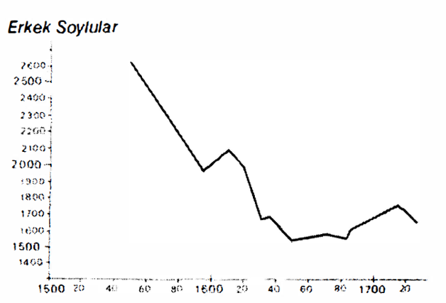
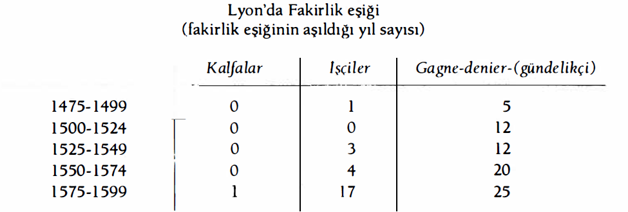

Tartışmaya toplumsalın boyutlarını dahil etmek, önceki bölümlerde ortaya konulan ve az çok çözülen sorunları yeniden ele almak demektir. Ve aynı zamanda, toplumun tek başına kapsadığı zorlukları ve karanlıkları onlara eklemek demektir.
Toplum, dağınık, heryerde hazır ve nazır ve bazen de soluduğumuz hava gibi hissetmediğimiz gerçeğiyle bizi kapsamakta, bize nüfuz etmekte, tüm hayatımızı yönlendirmektedir. Genç Marx, “bende düşünen toplumdur” diye yazmaktaydı. Öyleyse tarihçi, geriye doğru bakarken karşısında yalnızca, sorumluluklarını keyfine göre tartabileceği bireyler olduğunu sandığında, çoğu zaman kendini görüntülere kaptırmakta değil midir? Gerçekte ödevi yalnızca, kötüye kullanılan bir formül olan “insan”ı bulmak olmayıp, herbiri diğerlerine karşı yüklenimler üstlenmiş olan, çeşitli büyüklüklerdeki grupları teşhis etmektir. Lucien Febvre filozofların sosyoloji kelimesini yaratarak, gönlüne göre bir tarihe uygun düşecek tek başlığı gizlemelerinden üzüntü duymaktaydı. Kuşkusuz, sosyolojinin Emile Durkheim'le (1896) birlikte, toplumsal bilimlerin bütünü için ortaya çıkışı, bir cins Copernicus veya Galilei devrimi, bir paradigma değişikliği olmuştur ve bunun sonuçları bugün bile kendilerini duyurmaktadırlar. Henri Berr o sıralar bu durumu, pozitivizmin yıllarca ağır basmasından sonra, “genel fikirler"e bir geri dönüş olarak selamlamıştır: “tarihe yeniden felsefe sokulmaktadır". Bugün biz tarihçiler onun daha çok, genel fikirlere fazlasıyla düşkün olduğunu ve tarihsel yönün onda eksik olduğunu teşhis etmekteyiz. Tarihsel bir ekonomi varsa da, henüz tarihsel bir sosyoloji yoktur. Ve bu güçsüzlüğün nedenleri fazlasıyla aşikârdır.
Her şeyden önce, belli bir tarzda bir bilim olan iktisadın tersine, sosyoloji nesnesini iyi tanımlayamamaktadır. Toplum nedir? Hatta tarihçiyi tam anlamıyla tatmin etmek üzere yapılmamış tanımlar getiren Georges Gurvitch’in ölümünden (1965) beri bu soru sorulmamaktadır bile. Onun “bütünsel toplum”u, toplumsal’ın bir cins zarfı gibi ortaya çıkmaktadır; ama bu zarf cam bir kapak kadar ince, saydam ve narin olmaktadır. Somuta sıkı sıkıya bağımlı olan tarihçi için, bütünsel toplum, birbirlerine bağlı olan veya olmayan canlı gerçeklerin toplamından başka bir şey olamaz. Toplum bir içeren değildir, içerenler ve içerilenlerden meydana gelmektedir.
Daha iyisi olmadığı için, toplumdan bütünlerin bütünü olarak, biz tarihçilerin çeşitli araştırma kollarımızda yanaştığımız tüm olguların toplamı olarak sözetme alışkanlığını edindim. Bu, matematikçilerin bile karşısında dikkatli oldukları, çok rahat bir kavramı onlardan ödünç almaktır. Ve belki de, sıradan bir gerçeği vurgulamak üzere, büyük bir kelime kullanmaktır, çünkü bütün ancak toplumsal olabilir. Ama bir tanımın yararı, önceden bir problematik sunması, bir ilk gözlem için kural sunmasıdır. Eğer bu gözlem bu sayede, başlangıcı ve akışı itibariyle kolaylaşırsa, sonra olguların kabul edilebilir bir sınıflandırması olursa; daha sonra da mantıksal bir aşma meydana gelirse, tanım yararlıdır ve kendini meşru kılmaktadır. Öte yandan, bütünlerin bütünü terimi, bizzat kendinde gözlenen her toplumsal gerçeğin, daha üst bir bütün içinde konumlandığını; bunun değişkenler demeti olarak, daha da geniş değişken demetlerini davet ettiğini, gerektirdiğini yararlı bir şekilde hatırlatıyor değil midir? Law’un kâtibi Jean-François Melon daha 1734’de: “Toplumun parçaları arasında öylesine sıkı bir bağlantı vardır ki, bunlardan birine gelen darbenin diğerlerine yansımaması mümkün değildir” demekteydi. Bu bugün “toplumsal süreç bölünmez bir bütündür” veya “ancak genel tarih vardır” demekle aynı şeydir, ve tabii yüzlerce formül arasından ancak birkaçını seçtiğimizi de belirtelim.
Tabii ki bu bütünsellik, uygulamada; daha kısıtlı, ama gözleme daha yatkın bütünler halinde bölünmelidir. Bu muazzam kitle başka türlü nasıl elden geçirilebilir ki? J. Schumpeter “araştırmacı, tasnifçi eliyle ekonomik olguları, yapay bir şekilde toplumun (üniter) büyük akıntısının içinden çekip almaktadır” demektedir. Bir başka araştırmacı, kendi keyfine göre, ya siyasal, ya da kültürel gerçeği çekip çıkartacaktır... G. M. Trevclyan, fazlasıyla parlak olan İngiltere'nin Toplumsal Tarihi adlı kitabında, bu başlık altında “siyasetten kopmuş bir halkın tarihini", sanki bu ayırım mümkünmüş ve en başta gelen toplumsal gerçek olan devlet, kendine refakat eden gerçeklerden ayrılabilirmiş gibi kabul etmektedir. Ama, hepsinin de esas olarak yapay olmasına rağmen, bu cinsten ayırımlara başvurmayan tarihçi, iktisatçı veya sosyolog yoktur. Marx’ın ayrımı kadar (altyapı, üstyapı), yukarıdaki açıklamalarımı dayandırdığım üçbölümlülük de yapaydır. Yalnızca açıklama usulleri söz konusudur, bunların hepsi de, ancak önemli sorunların etkin bir şekilde kavranılmasına izin vermeleri halinde işe yararlar.
Zaten her toplumsal bilim, kendi alanını sınırlayarak ve bölerek, böyle davranmış değil midir? Bu arada, bunu yapmakla, sistem zihniyeti ile, ama aynı zamanda zorunluktan ötürü, gerçeği parçalamıştır: aramızdan hangimiz, bir bakıma doğumundan itibaren uzmanlaşmamıştır, yeteneği veya eğilimi nedeniyle, bilginin şu veya bu alanına değil de, herhangi belli bir alanına nüfuz etmemiştir? İlke olarak genelleştirici olan, iki insan bilimi sosyoloji ve tarih, çok sayıda uzmanlık alanına bölünmektedirler: çalışma sosyolojisi, ekonomik sosyoloji, siyasal sosyoloji, bilgi sosyolojisi vs.; siyasal tarih, iktisat tarihi, toplumsal tarih, sanat tarihi, düşünce tarihi, bilim tarihi, teknikler tarihi vs.
Demek ki, toplumun meydana getirdiği bu büyük bütünün içinde, bizim yaptığımız gibi, birçok bütünü farketmek, sıradan bir ayırımdır; bu bütünlerin en iyi bilinenleri tabii ki iyi yerde bulunan ekonomik, hiyerarşik olan toplumsal veya toplumsal çerçeve (benim için bütünlerin bütünü olan toplum dememek için), siyasal, kültürel olanlardır. Bu bütünlerin herbiri de kendi hesabına altbütünlere ayrılmakta ve bu böyle sürüp gitmektedir. Bu şemada, bütünsel tarih (veya daha doğrusu, bütünselliğe yönelen tarih, yani toptan hale gelmek isteyen, öyle olmaya yönelen, ama hiçbir zaman tamamen öyle olmayan tarih), en azından dört “sistem"in bizzat kendilerini; sonra da bunları ilişkileri, bağımlılıkları, birbirlerine dolanmaları, korelasyon içinde incelemektir. Bu karşılıklı bağımlılık ve ilişkiler çoklu olduklarından ve her gruba özgü değişkenler, karşılıklı değişkenlere a priori feda edilemeyecekleri ve bunun tersi de geçerli olduğu için, inceleme bu şekilde olmak zorundadır.
Olanaksız ülkü, her şeyi tek bir düzlemin ve tek bir hareketin üzerinde sunabilmektir. Önerilecek uygulama, bölerken, zihinde bütünleştirici bir bakış açısını muhafaza etmektir: bu zorunlu olarak, açıklama esnasında düzey farklarını gidererek, birliği yeniden yaratmaya yönelerek, toplumun sahte bir basitliğine inanmamayı, şu yaygın formülleri, bunların yansıttıkları bütünsel yargıları önceden düşünmeden -tabakalı, sınıflı toplumlar, ya da tüketim toplumu- kullanmamayı tavsiye edecektir. Demek ki rahatlık sağlayan eşitliklere inanmamak gerekir: tüccarlar = kapitalistler; veya tüccarlar = burjuvalar; veya aristokratlar = toprak malikleri. Demek ki burjuvazi veya soyluluktan, sanki bu kelimeler iyice sınırlanmış bütünleri hatasız olarak işaret ediyorlarmışçasına; sanki farkedilmesi kolay sınırlar, kategorileri veya sınıfları ayırıyorlarmışçasına sözetmemek ve bu ayırımların “suyun akışkanlığına" sahip olduklarını akılda tutmak gerekir.
Bundan da fazlası, şu veya bu kesimin, bir kerede ebediyete kadar geçerli olmak üzere, bir diğerinin veya hepsinin üzerinde yükselebileceğini hayal etmemek gerekir. Örneğin siyasal tarihin tartışılmaz ve sürekli üstünlüğüne, devletin kutsal önceliğine inanmıyorum. Durumuna göre, devlet her şeyi belirleyebilir veya adeta hiçbir şeyi peşinden sürükleyemez. Paul Adam, yayınlanacak olan bir Fransa Tarihi’nin daktilo edilmiş metninde, Akdeniz hakkındaki kitabımdan, II. Felipe’nin siyasal rolünün ezici üstünlüğünün çıktığını ileri sürmektedir. Acaba bu, karmaşık bir tabloya, kendi görüş biçimini tatbik etmesi değil midir? Fiili durumda sektörler, gruplar, bütünler; kendilerini az veya çok sıkı bir şekilde kapsayan, ama hiçbir zaman tamamen özgür bırakmayan bütünsel bir toplumda, hareketli olarak kalmaya devam eden bir hiyerarşi içinde, birbirlerine karşı oynamaya hiçbir zaman ara vermemektedirler.
İşlerin başka yerlerden daha iyi görüldüğü Avrupa'da, dünyaya nazaran ileride olan şu Avrupa’da, hızlı bir gelişme içinde olan ekonomi, XI. veya XII. yüzyıldan itibaren, daha da kesin olarak, XVI. yüzyıldan itibaren, diğer sektörlere oldukça sık bir şekilde üste gelmiş; onları kendilerini ona göre tanımlamaya zorlamıştır ve kendinikanıtlayan bu önceliğin, dar kıtanın erken modernliğinin köklerinden biri olduğunda hiçbir kuşku yoktur. Ama bu kalkış yüzyıllarından önce, ekonominin esamisinin okunmadığını ve 1622 tarihinde bir risale yazan şu Fransız gibi, hiç kimsenin “her kent, cumhuriyet veya krallık esas olarak buğday, şarap, et ve oduna dayanır" diye yazamadığını düşünmek abestir. Çok sayıda sıçramalı değişime gebe olan ekonominin yükselen gücü karşısında, diğer kesimlerin, toplumun tümünün rollerini oynamadıklarını, (nadiren) hızlandırıcılıklar oluşturduklarını, bundan daha sık olmak üzere, yüzyıllar boyunca tutunan ve etki eden engeller, karşı güçler ve frenler getirmediklerini düşünmek de abestir. Her toplumun içinden akımlar geçer; her toplum engellerle, yolları kapatan inatçı kalıntılarla, süreklilikleri tarihçinin gözünde açıklayıcı olan uzun süreli yapılarla doludur. Bu tarihsel yapılar görünür, farkedilir ve belli bir biçimde de, ölçülebilir niteliktedirler: bunların süresi ölçüdür.
Polemik ve yapıcı olan küçük bir kitapta, başka bir dil konuşan François Fourquet, bu sürtüşmeleri, “arzu" ile iktidar arasındaki bir çatışmaya getirmektedir: bir yanda ihtiyaçlarının değil de, tıpkı elektrik gibi hareket halinde bir kitle olan arzularla yüklü birey, öte yanda iktidarın bastırma aleti bir iktidar -her ne olursa olsun-; bu alet denge ve toplumun verimi adına, düzeni korumaktadır. Marx’la birlikte, ihtiyaçların bir açıklama olduğunu; Fourquet ile birlikte, arzuların hiç de daha az geniş olmayan bir açıklama olduğunu (ama arzuların ihtiyaçları içermemesi mümkün müdür?), iktidar aletinin siyasal ve ondan hiç de geri kalmamak üzere, ekonomik olduğunun da bir açıklama olduğunu düşünüyorum.
Ve ekonomik ilerleme Orta Çağdan XVIII. yüzyıla kadar, işte bu çatışmalı güçlerin bütünü içinde örgütlenirken, gelişmeleri ülkelere göre az veya çok yavaş ve çok farklı olan kapitalizmi de peşinden sürüklemektedir. İzleyen sahifelerde, açıklamanın ön planına, onun rastladığı direnmeler ve engeller konulacaktır.
Toplumsal hiyerarşi tekil veya çoğul olarak, toplum kelimesinin sıradan, ama esas içeriğini işaret etmek anlamına gelmektedir. Toplum kelimesi, burada sunumumuzun rahat olması için, üst bir mertebeye konulmuştur. Tabakalar veya kategoriler, hatta toplumsal sınıflar yerine, hiyerarşiler demeyi tercih ediyorum. Belli hacimdeki her toplum, kategorilerinin, hatta kastlarının ve sınıflarının olmasına rağmen, bunlar dışsallaştırılmış olsunlar veya olmasınlar, ezeli sınıf savaşlarıyla birlikte bilinçli bir şekilde kavranmamakta ya da kavranamamaktadırlar. Bütün toplumlar. Sınıf savaşının sine qua non koşulu olarak, bu savaşların ve zıtlaşmaların açık bilincini içerdiğini ileri süren Georges Gurvitch’le, bir kereliğine aynı fikirde değilim, ona bakılacak olursa, bu bilinç endüstriyel toplumdan önce varolmuş olamaz. Oysa bunun tersine kanıtlar boldur. Ve Alain Touraine şöyle yazarken kuşkusuz haklıdır: “üretimin bir kısmının tüketimden çekilerek biriktirildiği her toplum" bir “sınıf savaşı"nı barındırmaktadır. Bu bütün toplumlar demektir.
Ama tercih eniğimiz hiyerarşi kelimesine dönelim. Bu kelime, fazla bir zorluk olmadan, yoğun nüfuslu toplumların bütün tarihine kendiliğinden uygulanmaktadır: bu toplumlardan hiçbiri bir eşitlik düzlemi üzerinde, yatay olarak gelişmemektedir. Bunların hepsi de, açıkça hiyerarşiktir. Bunun sonucunda, Portekizli kâşiflerin, fırsat bulduklarında zenci köle ve altın tozu satan küçük Berber kabileleriyle, 1446’ya doğru Atlantik Sahra'sında, Cabo ve Rescate civarında ve başka yerlerde temasa geçtiklerindeki şaşkınlıkları meydana gelmiştir: “hiçbir kralları yoktur". Ama eğer daha yakından bakılacak olursa, klanlar oluşturmaktadırlar ve bu klanların şefleri vardır. Formaza’nın ilkel halkları Hollandalıları, 1630'a doğru daha az şaşırtmamışlardır: “ne kralları, ne hükümdarları var. Hep savaş halindeler, yani bir köy diğerine karşı”. Ama bir köy bir gruplaşma, bir düzendir. Gerçek toplumların tersi olarak hayal edilen ütopik toplumlar bile, olağan olarak hiyerarşiktirler. Hatta Olimpas'taki Yunan tanrıları da hiyerarşiktirler. Sonuca varalım: iskeleti olmayan, yapısı olmayan toplum yoktur.
Siyasal sistemleri her ne olursa olsun, bizim bugünkü toplumlarımız, eskilerinden daha eşitlikçi değillerdir. En azından dişe diş bir şekilde meydan okunan ayrıcalık, eski saflığından biraz kaybetmiştir. Dün, bunun tersine, tabakalı toplumlarda, mertebesini muhafaza etmek, bir liyakat biçimi, bir cins erdemdi. Yalnızca, mensup olmadığı toplumsal mertebenin işaretlerini taşımaya çalışan kişi gülünç olmakta ve mahkûm edilmekteydi. Bir proje üreticisinin, sınıfların bozulmasına ve tasarrufu israf eden lükse karşı, XVIII. yüzyılın ilk yıllarında ne önerdiğine bakınız. Fransa kralı prenslere, düklere, ünvanlı kişilere ve kanlarına “tıpkı Malta ve Saint Lazare tarikat üstatlarının taşıdıkları gibi" mavi bir şerit; diğer soylulara kırmızı bir şerit versin; tüm subaylar, çavuşlar, erler hep üniforma giysinler; oda uşakları ve kâhyalar da dahil, tüm hizmetkârlar zorunlu olarak uşak kıyafeti giysinler ve şapkalarının kenarına “şerit veya altın ile gümüş süs koyamasınlar". Bu, gösterişe yönelik harcamalara engel olarak “küçüklerle büyüklerin karışmasını olanaksız hale getirecek" ideal çözüm değil midir?
Olağan durumda, bu karışmayı önleyen, çok daha basit olanak, zenginliğin paylaşımıdır: bir yanda lüks, diğer yanda sefalet. Aynı zamanda iktidarın da paylaşımıdır: bir yanda otorite, öteki yanda itaat. 1776 tarihli bir İtalyan metni “İnsanlığın bir bölümü, diğeri patlayacak kadar şişsin diye. ölümüne kötü muameleye tabi tutulmaktadır" demektedir.
Hiyerarşik düzen hiçbir zaman basit değildir, her toplum çeşitliliktir, çoğulluktur; kendine rağmen bölünmekte ve bu bölünme, muhtemelen bizatihi onun varlığı olmaktadır.
Bir örnek verelim: Marxizme yakın tarihçi ve iktisatçılar, tanımlamak için çabalayıp durdukları, şu “feodal'’ denilen toplumun temeldeki çoğulculuğunu kabul etmek ve açıklamak zorunda kalmışlardır. Daha öteye gitmeden önce, çok fazla sık kullanılan feodalizm kelimesine Marc Bloch veya Lucien Febvre kadar allerji duyduğumu söylemeliyim. Bu yeni icat kelime, Aşağı Latinceden türetilmiş olup (feodum, fief), onlara göre olduğu kadar, bana göre de yalnızca fiefi ve ona bağlı olan şeyleri kapsamaktadır, başka hiçbir şey değil. Avrupa'nın XI. ve XV. yüzyıllar arasındaki tüm toplumunu bu kelimeyle ifade etmek; tıpkı aynı toplumun bütününü XVI.-XX. yüzyıllar arasında kapitalizm kelimesiyle ifade etmek kadar mantıksızdır. Ama bu kavgayı bırakalım. Hatta, diğer yaygın bir formül olan, feodal denilen toplumun, Avrupa toplumsal tarihinin geniş bir aşamasını işaret edebileceğini; her şeyden sonra Avrupa B’nin bir sonraki aşamayı temsil etmesi halinde, rahatlıkla Avrupa A da diyebileceğimizi kabul edelim. Ünlü tarihçilerin X.-XIII. yüzyıllar arasını gerçek Rönesans olarak adlandırmalarıyla, her halükârda A’dan B'ye olan eklemleşme resmolmuş duruma geçmektedir.
Feodal denilen topluma ilişkin en iyi sunum, bize göre, Marc Bloch'un harika kitabının dikkatli bir okunmasından itibaren oluşturulan Georges Gurvitch'in fazlasıyla hızlı ve otoriter özeti olup, Bloch'un sonuçlarını çok özel bir şekilde genişletmektedir. Çökelti, tahrip, tomurcuklanma yüzyılları tarafından biçimlendirilen bu “feodal" toplum, en azından beş farklı “toplum”un, beş farklı hiyerarşinin birarada varoluşlarıdır. Bunların en eskisi, tabanda çözülmüş olarak yer alan, zamanın karanlıklarında kaybolan ve dar birliklerinin içinde, senyörleri ve yakın köylüleri biraraya getiren senyörlük toplumudur. Daha az eski olmasına rağmen, kökleri Roma imparatorluğu kadar uzaklara ve ruhani köklerini de daha da uzaklara kadar uzatan, Roma kilisesinin güçlü ve inatçı bir şekilde inşa ettiği teokratik bir toplum; bu güç ve inadın nedeni yalnızca müminleri fethetmenin değil, onları elde tutmak, yani sürekli olarak yeniden elde etmek zorunluğudur. İlk Avrupa’nın artık ürünlerinin önemli bir bölümü, bu muazzam ve geniş girişimi ayakta tutmuştur: katedraller, kiliseler, manastırlar, kilise rantları; acaba burada söz konusu olan bir yatırım mı, yoksa sermayenin israfı mıdır? Üçüncü olarak, diğerlerinin arasında büyüyen, orada kendine destek arayan daha genç bir toplum, merkezi devletin etrafında örgütlenmektedir. Bu toplum sonuncu Karolenjlerle birlikte batmıştır, ama çoğu zaman olduğu gibi, bu batış tam olmamıştır. Dördüncü alt sektör: dar anlamda feodalite, devletin yokluğu nedeniyle meydana gelen boşlukta zirveye süzülen ve senyörleri uzun bir hiyerarşik zincir halinde biraraya getiren üst-yapı. Ve bu üst-yapı, bu hiyerarşi aracılığıyla her şeyi elinde tutmak, her şeyi manevra etmek istemektedir. Ama Kilise sistemini halkaları arasına tamamen alamayacaktır; devlet bu ağı birgün yırtacaktır; ve köylüye gelince, çoğu zaman bu üst hareketliliğin kıyısında yaşayacaktır. Nihayet beşinci ve sonuncu sistem, bizim bakış açımızdan hepsinin en önemlisi olan kentler. Bunlar X. ve XI. yüzyıldan itibaren su yüzüne çıkmışlar veya yeniden çıkmışlardır. Bunlar ayrı devletler, ayrı toplumlar, ayrı uygarlıklar, ayrı ekonomilerdir. Uzaktaki bir geçmişin çocuğudurlar: Roma çoğu zaman, onların bağrında yeniden yaşamıştır. Ama kentler aynı zamanda, onların çiçek açmasına yol açan bir şimdinin de çocuklarıdır; öte yandan kentler yeni varlıklardır: en başta devasa bir konjonktürün, yeniden doğan ticaretin, yeniden ortaya çıkan paranın çocuğudurlar. Başlıca çarpan olan para aracılığıyla, bir cins elektrik Bizans ve İslam’dan itibaren, Akdeniz’in azameti aracılığıyla Batı’ya bağlanmıştır. Daha sonra denizin tümü tekrar Hıristiyan olduğunda, ilk Avrupa’nın atılımı ve alt üst oluşu meydana gelecektir.
Demek ki toplam olarak, birarada varolan, iyi veya kötü birbirlerine yaslanan birçok toplum. Tek bir sistem değil de, sistemler; tek bir hiyerarşi değil, hiyerarşiler; tek bir üretim tarzı değil, üretim tarzları; tek bir kültür değil, kültürler, bilinçlenmeler, diller, yaşama sanatları. Her şey çoğul hale getirilmelidir.
Bu noktada hata yapmayan Georges Gurvitch, feodal toplumun hacmini paylaşan, söz konusu beş toplumun, antinomik ve yabancı olduklarını; birinden çıkmanın, boşluğa ve umutsuzluğa düşmek olduğunu, biraz hızlı bir şekilde savunmaktadır. Bu toplumlar fiili olarak birlikte yaşamışlar, karışmışlardır; belli bir tutarlık gerektirmektedirler. Kent devletler insanlarını, kendilerini çevreleyen şu senyörlüğe tabi kırlar ve topraklardan almışlar; yalnızca köylüleri değil senyörleri de, daha da iyisi kırlarda doğup, kentlere yerleşirken orada çözülmez bağları olan sağlam klanlar halinde kalan senyör gruplarını da kendilerine katmışlardır. Kilisenin bağrında, papalık XIII. yüzyıldan itibaren, hıristiyanlardan aldığı vergileri toplayabilmek için Siena kenti bankalarına başvurmuştur. İngiltere krallığı I. Edward’la birlikte Luccalı, sonra da Floransalı borç vericilere başvurmaktadır. Senyörler çok erkenden buğday ve hayvan satıcıları olmuşlardır; bunları tüccarların satın almaları gerekmektedir. Kentlere gelince, bunların modernliğin prototipleri olduğu; ve modern devlet ile ulusal ekonomi doğduğunda da, bunların onların modelleri olduğu; diğer toplumların aleyhine olmak üzere, birikimin ve zenginliğin en mükemmelinden alanları oldukları bilinmektedir.
Bu söylendikten sonra, her toplum veya alt-toplum, veya aileden başlamak üzere her toplumsal grup, kendi öz hiyerarşisine sahiptir: merkezi devlet gibi Kilise de; yurttaşlar zümresiyle tüccar kent gibi, aslında bir hiyerarşiden ibaret olan feodal toplum da; bir yanda senyör, diğer yanda köylüyle senyörlük rejimi gibi. Tutarlı bir bütünsel toplum, diğerlerini zorunlu olarak tahrip etmeden, kendini bütüne dayatmayı başarmış bir hiyerarşi değil midir?
Bu durum, bütünsel bir toplumu aralarında paylaşan tüm toplumlardan birinin veya birkaçının, her zaman diğerlerinden üste çıkmaya çalışırken, bütünün sıçra- malı bir değişimine yol açmasını engellememektedir. Bu sıçramalı değişim her zaman çok yavaş bir şekilde resmolmakta, sonra kendini kanıtlamakta, ve daha sonra yeni bir dönüşümün, bu kez zafer kazanana veya kazananlara karşı harekete geçmesini beklemektedir. Böylesine bir çoğulluk hareketin esas unsuru olduğu kadar, harekete direnme olarak da ortaya çıkmaktadır. Her evrim şeması, hatta Marx’ınki bile, bu farkına varış karşısında daha açık hale gelmektedir.
Ancak, eğer toplumun bütününe yukarıdan bakılacak olursa, insanı ilk çarpan bu alt-kategoriler değil de, kitleyi iktidar ve zenginlik basamakları boyunca, tepeden tabana bölen temel eşitsizlik olmaktadır. Her gözlem, toplumların sürekli yasası olan bu derin eşitsizliği açığa çıkartmaktadır. Sosyologların bildikleri üzere, bu istisnası olmayan, yapısal bir yasadır. Ama bu yasa nasıl açıklanabilir?
Piramidin tepesinde hemen görülen, bir avuç ayrıcalıklıdır. Her şey olağan olarak bu minik topluma ulaşmaktadır: iktidar, zenginlik, artık ürünlerin geniş bir kesimi onlara aittir; yönetmek, hükümet etmek, yön vermek, karar almak, yatırım sürecini, yani üretimi sağlamak onlara aittir; mal ve hizmet akımlar, para dalgaları onlarda son bulmaktadır. Onların altında, ekonominin ajanlarının kalabalığı, her mertebeden çalışanlar, yönetilenler kitlesi kat kat yer almaktadır. Ve hepsinin altında muazzam bir toplumsal çöp, işsizlerin evreni yer almaktadır.
Tabii ki toplumsal oyunun kâğıtları bir kerede, ebediyen geçerli olmak üzere dağıtılmamıştır, ama yeniden dağıtımlar nadir, her zaman cimridirler. İnsanlar toplumsal hiyerarşi içinde yükselmek için istedikleri kadar yırtınsınlar, buna ulaşabilmek için çoğu zaman birçok kuşak gerekmektedir ve buraya vardıklarında da, mücadele etmeden burada tutunamamaktadırlar. Bu toplumsal savaş şeref basamakları ve iktidara ulaşmanın dar yollarıyla canlı toplumlar olduğundan beri süreklilik göstermektedir. Demek ki hiçbir şeyin -devlet, soyluluk, burjuvazi, kapitalizm veya kültür- şu veya bu şekilde toplumun üst tabakalarını kavramadan, gerçekten hiçbir önemi olmadığını önceden biliyoruz. İşte bu yükseklikte yönetim, hükümet etme, yargı vardır, bu yükseklikten doktrin aşılanmakta, zenginlikler burada toplanmakta, hatta burada düşünülmektedir; parlak kültür burada üretilmekte ve yeniden üretilmektedir.
Şaşırtıcı olan, ayrıcalıkların her zaman bu kadar az sayıda olmalarıdır. Madem ki toplumsal yükselme vardır, madem ki bu minik toplum ayrıcalıklı olmayanların kendine tahsis ettiği artık emeklerine bağımlıdır. öyleyse bu artıklar büyüdüklerinde, yukarının dar halkının çoğalması gerekir. Oysa, dün olduğu gibi bugün de, hemen hiçbir çoğalma olmamaktadır. Halk cephesinin sloganına göre 1936 Fransa'sı “200 aileden" sorulmaktaydı, bunlar nisbeten gizli, ama heryerde hazır ve nazırdırlar, bu kolaylıkla tebessüm yaratan siyasal bir slogandı. Ama Adolphe Thiers, bu tarihten bir yüzyıl önce, hiç duygulanmadan şöyle yazmaktaydı: “Fransa gibi bir devlette, oniki milyon aile(den)..., bolluğa ulaşmış en fazlasından iki veya üçyüz tanesinin olduğu bilinmektedir". Ve bundan da bir yüzyıl önce, konu hakkında Thiers kadar inançlı bir kamu düzeni taraftarı olan Jean-François Melon, bir ulusun lüksü, onlardan daha az mutlu olmayan 20 milyon diğerinin karşısında, 1000 kadar insanla kısıtlıdır" diye açıklamakta ve “iyi bir yönetim onları emeklerinin meyvalarından yararlandırırsa" diye eklemektedir.
Acaba şimdiki demokrasilerimiz çok mu farklıdırlar? En azından C. W. Mills’in, bugünün Birleşik Amerika’sının bütününe ilişkin olarak, her önemli kararın bağımlı olduğu grubun şaşırtıcı darlığı üzerinde ısrar eden iktidar seçkini ve zenginlik seçkini adlı kitabı bilinmektedir. Burada da ulusal seçkinler topluluğu birkaç egemen aileden oluşmakta ve bu hanedanlar yıllar geçtikçe, az değişmektedir. Bu mutatis mııtandis, 21 Ocak 1531 'de Gabriele Cesano’ya yazdığı mektupta, Sienalı bir yazar olan Claudio Toloııci'nin çoktan sahip olduğu dildir: “hatta büyük olsa bile her cumhuriyette, halka dayalı olsa bile her devlette, elliden fazla yurttaşın komuta mevkilerine çıktığı enderdir. Ne Atina’da veya Roma’da, ne Venedik’te veya Lucca’da, devleti yöneten yurttaşlar çok sayıdadır, benche si reggano queste terre sotto nome di republica, bu devletlerin cumhuriyet adıyla yönetiliyor olmasına rağmen”. Sonuç olarak, ele alınan toplum veya dönem her ne olursa olsun ve bunlar dünyanın hangi bölgesinde bulunurlarsa bulunsunlar, aldatıcı birçok küçük sayı yasası yok mudur? Gerçekte bu insanı rahatsız eden bir yasadır, çünkü bunun nedenlerini iyi bir şekilde ayıklayamıyoruz. Ama gene de, kendini bize fütursuzca sunan bir gerçeklik söz konusudur. Tartışmak yararsızdır: tüm tanıklıklar uyum halindedir.
Venedik’te 1575 veba salgınından önce, nobili (erkek, kadın ve çocuk olarak) en fazlasından 10.000 kişidir ve bu Venedik tarihinin en yüksek sayısıdır. Yani, 200.000 civarında salınan toplam nüfusun (Venedik, artı Dogado) % 5’i. Üstelik, çoğu zaman resmi birer dilenci haline gelmiş ve San Barnabo gibi mütevazi bir mahalleye atılarak, alaycı bir şekilde Barnabotti olarak anılan fakirleşmiş soyluları bu rakamdan çıkartmak gerekmektedir. Ve bu çıkartma yapıldıktan sonra bile, geriye kalan yurttaşlar yalnızca zengin tüccarlardan meydana gelmemektedirler. 1630 veba salgınından sonra, bu sonuncuların sayısı o kadar azalmıştır ki, artık devletin üst makamlarında hizmet verebilecek yetenekte 14veya 15 kişi kalmıştır. Çok tipik bir şekilde kapitalist bir kent olan Cenova’da, 1684 tarihli bir muhtıraya göre, Cumhuriyeti elinde tutan soyluluk (ünvanları nedeniyle olduğu kadar, parasından da ötürü), herhalde 80.000 kişilik bir nüfus içinde, en fazlasından 700 kişidir (aileleri hariç).
Ve Venedik ile Cenova’ya ait bu yüzdeler, en yüksek olanların arasındadır. Nuremberg’de, iktidar XIV. yüzyıldan itibaren dar bir aristokrasinin elindedir (yasaya göre, 43 soylu aile), yani kentin 20.000, bucağın 20.000 nüfusuna karşılık, 150200 kişi. Bu aileler iç Meclis’in temsilcilerini atama hakkına tek başlarına sahiptirler ve bu meclis de, çoğu zaman XIII. yüzyıla kadar geri giden eski tarihsel ve zengin ailelerden Yedi Yaşlıyı seçmektedir (bunlar fiilen her şeye karar vermekte, hükümet etmekte, yönetmekte, yargılamakta ve kimseye hesap vermemektedirler). Böylesine bir ayrıcalık, hep aynı adların çok sık bir şekilde, Nuremberg debdebe dünyasının içinde ortaya çıkmalarını açıklamaktadır. Kent, XIV. ve XV. yüzyıl Almanya’sının tekrarlanan karışıklıklarını, mucizevi bir şekilde atlatacaktır. Ve her şey söylenecektir. Londra’da 1603’te, kraliçe Elizabeth’in saltanatının sonlarında, bütün iş alemi 200’den daha az sayıda büyük tüccarın elindedir. XVII. yüzyılda Alçak Ülkeler’de, kent naiplerinden ve eyalet yöneticilerinden oluşan yönetici aristokrasi, 2 milyonluk bir nüfusun içinde, 10.000 kişidir. Serbestileri ve zenginliklerinden ötürü aynı konumda bir kent olan Lyon'da, ruhbanın kent danışmanlarına yönelttiği alaycı uyanlar (8 Kasım 1558) ikircikliğe yer bırakmamaktadır: “hemen hepiniz tüccar olan siz danışman beyler (aslında kentin gerçek yöneticileri)... Kentte danışman olmayı umabilecek 30 kişiden fazlası yoktur”. XVI. yüzyılda Anvers'de de aynı dar grup vardır: “senatörler”inki; İngilizler bunlara o kentin “lordları” demektedirler. Bir Fransız tüccara göre, Sevilla'da 1702'de “konsüllük, ticaretin iplerini kendi özel amaçlan doğrultusunda aynatan dört veya beş özel kişinin elindedir” ve bunlar diğer tüccarların aleyhine zenginleşmekte tek başlarınadır. 1704 tarihli bir muhtıra “Sevilla konsüllü- ğünün korkunç eşitsizlikleri”nden söz etmekte duraksamamaktadır. Le Mans'da 1749'da, kentin zenginliğini meydana getiren yünlü etamin imal ve ticaretine sekiz veya dokuz toptancı egemendir; bunlar “Cureau, Veron, des Granges, Montarou, Garnier, Nouet, Feart ve Bodier beylerdir”. Eski Rejimin sonlarında serbest limanı sayesinde zenginleşmiş olan Dunkerque, aslında intra muros oturmayan bir soyluluğun safları arasında hiç de kaybolmak istemeyen bir para aristokrasisinin elinde, 20.000'den biraz daha fazla nüfuslu bir kenttir. Gerçekten de, herkesin ne biçme, ne tuz, ne de pul vergisi ödediği, muazzam bir ayrıcalıktan yararlandığı serbest bir kentte oturunca, soylulaşmak ne işe yarar? Garip Dunkerque burjuvazisi kapalı bir kast halinde oluşmuştur ve gerçek hanedanlara sahiptir: “Faulconnierler, Trescalar, Coffynler, Lhermiteler, Spynsler. Marsilya'da da aynı gerçek söz konusudur. A. Chabaud'ya göre “kent yönetimi... 150 yıl süreyle (1789'dan önce)... en fazlasından on kadar ailenin elinde olmuştur; bunların evlilik, akrabalık yoluyla artan birlikleri, sonunda onları tek bir aile haline getirmiştir”. Marsilya'nın XVIII. yüzyıldaki büyük tüccarlarını Ch. Carriere'le birlikte sayalım^ “(nüfusun) % 1'i bile değil..., önemsiz bir azınlık, ama zenginliği elinde tutmakta ve kentin tüm faaliyetine egemen olduğu kadar, yönetimi de kendine tahsis etmektedir. Floransa'da benefiziati XV. yüzyılda 3.000 veya daha fazla iken; 1760'a doğru yalnızca 800 veya 1.000 kişidirler, öyle bir daralma söz konusudur ki, Medicilerin devre dışı bırakılmasından sonra, 1737'de Taskana büyük dükleri haline gelen Habsburg-Lorraineler yeni soylular yaratmak zorunda kalmışlardır. XVIII. yüzyılın ortasında, Piacenza kadar vasat bir kentte (30.000 nüfus) 250-300 soylu aile bulunmaktadır; yani 1250-1500 ayrıcalıklı (erkek, kadın, çocuk), nüfusun % 4-5’i. Ama nisbeten yüksek olan bu oran, her türden ve her servet düzeyinden soyluları içermektedir. Ve bu kırsal bölgenin yegane zengin sınıfı kentsel soyluluk olduğu için, Piacenza nüfusuna, kırlardaki 170.000 köylüyü de katmak gerekir. Bu 200 binlik toplam üzerinden, yüzde % 1'in altına düşecektir.
Bu arada, bunun sapkın bir sonuç olduğunu sanmayalım. XVIII. yüzyıl için yapılan bir tahmin, tüm Lombardiya'daki soyluların, kent ve kırların toplam nüfusuna oranını % 1 olarak vermektedir ve bu küçük ayrıcalıklı grup, toprak mülkiyetinin yaklaşık yarısını elinde tutmaktadır. Daha dar bir örnek olarak, Cremona çevresinde 1626'ya doğru, 1.600.000 pertiche topraktan “18 feodal aile bunun 833.000'ine tek başlarına sahiptirler”, yani yarıdan fazlasına.
Merkezi bir devletin boyutlarına çıkartılan hesaplamalar da, benzeri bir dil konuşmaktadırlar. Gregory King (1688)5° İngiltere'de yıllık gelirleri 200 sterling lirayı aşan, yaklaşık 36.000 aile saymaktadır, oysa o sıralar İngiltere'de yaklaşık 1.400.000 aile vardır (rakamı ben yuvarladım), yani % 2,6 civarında bir oran. Ve bu düzeye ulaşabilmek için, lordları, baronetleri, squireları, gentlemen’i, krallık “subayları”nı, önemli tüccarları, artı aslında o sıralar pupa yelken ilerleyen 10.000 kanun adamım, karmakarışık bir şekilde toplamak gerekmiştir. Öte yandan, 200 liranın üstündeki gelir kıstası da herhalde, bu başta yer alan başarı grubunu fazlasıyla genişletmektedir; onun içinde de büyük eşitsizlikler vardır, çünkü büyük toprak maliklerine ait olan, en yüksek gelirler, yılda ortalama olarak, 2.800 lira civarında tahmin edilmektedirler. Massie tarafından verilen rakamlardı 1760’ta III. George’un tahta çıktığı sırada, zenginliğin yeni bir dağılımını işaret etmektedirler, tüccar sınıfı o sıralar toprak sınıfına nazaran kazançlı çıkmaktadır. Ama krallığın tümünde gerçekten zengin olanlar, siyasal ve toplumsal bakımdan gerçekten güçlü olanlar sayılacak olursa, uzmanların dediklerine göre, bu durumda en fazla 150 aile, yani 600-700 kişi ortaya çıkacaktır. Fransa’da aynı sıralar, eski soyluluk 80.000 kişi, soyluluğun bütünü 300.000 kişidir, yani Fransızların “% 1-1,5’i”.53 Burjuvaziye gelince, onu nasıl farkedebiliriz? Ne olduğundan çok, ne olmadığı bilinmektedir ve rakamlar eksiktir. Pierre Leon, toplam olarak, bütünün % 8,4’ü olduğunu söyleme riskine girmektedir, ama bu rakam içinde kaç tane büyük burjuva vardır? Güvenilir yegâne oran, Brötanya soyluluğuna ilişkin olanıdır (%2), ama Brötanya 40.000 soylusuyla, bilindiği üzere, krallık ortalamasının çok üstündedir.
Belli bir güvenilirliğe sahip daha yüksek bir yüzde bulabilmek için, soylu mevcudunun nüfusun % 8-10’unu meydana getirdiği Polonya’yı gündeme getirmek gerekir. “Bu oran Avrupa’nın en yükseğidir”. Ama bütün bu Polonyalı soylular ekâbir değildir, hatta çoğu çok fakir, bazıları da düpedüz serseridir ve bunların “hayat düzeyi köylülerinkinden hiç de farklı değildir”. Ve zengin tüccar sınıfı çok küçüktür. Demek ki, başka yerlerde olduğu gibi, burada da ayrıcalıklı ve gerçekten önemli olan tabaka, nüfus mevcutlarının küçük bir oranını temsil etmektedir.

VENEDİK’TE SOYLULAR
Karekteristik örnek: Uygulamada kapalı olan üst aristokrasi sayıca azalmaktadır. Yeni ailelerle beslenme yetersizdir. 1680'den sonraki hafif toparlanma acaba hayat şartlarındaki bir düzelmeye mi cevap vermektedir?
Kuşkusuz, bazı dar azınlıklar, nisbeten daha da dardırlar: Büyük Petro’nun hizmetindeki soylular, Çin mandarinleri, Japonya’nın daimyo’ları, Büyük Mogolun Hindistan’ının racaları ve ümerası, veya Cezayir dayılığının gelişmemiş halklarına egemen olan ve onları dehşete garkeden bir avuç maceracı asker ve denizci; muazzam İspanyol Amerika’sına ne pahasına olursa olsun yerleşecek olan, hepsi de zengin olmayan ince mülk sahipleri tabakası. Bu çeşitli ülkelerdeki büyük tüccarların önemi aşırı bir farklılaşma göstermektedir, ama bunlar sayısal olarak zayıf kalmaktadırlar. Voltaire’le birlikte sonuca varalım: iyi örgütlenmiş bir ülkede, küçük sayı “büyük sayıyı çalıştırmakta, onun tarafından beslenmekte ve onu yönetmektedir”.
Ama bu gerçekten sonuca varmak mıdır? Bu en fazlasından, bir kez daha, tamamen anlamadan farketmektir. Ekonomik alanda göze fazlasıyla görünen ve diğer alanlardaki “yoğunlaşma”nın sonuçlarını gündeme getirmek, sorunu genişletmek ve yerini değiştirmektir. Gerçekten de, yoğunlaşmanın bizzat kendisi nasıl açıklanabilir? Ama tarihçiler tüm ışıklarını bu toplumsal zirveler üzerinde toplamışlardır. Böylece Charles Carriere’in dediği gibi “en kolayına gitmişler”dir. Her şeyin sonunda bu o kadar kesin değildir, çünkü ayrıcalıkların küçük sayısı, kolay çözümlere gelmeyen bir sorun olarak ortaya çıkmaktadır. Bu küçük sayı, devrimlere bile rağmen nasıl ayakta kalmaktadır? Kendi altında gelişen muazzam kitleyi nasıl hizada tutmaktadır? Devletin bazen ayrıcalıklılara karşı giriştiği mücadelede, bunlar neden tamamen ve kesinlikle kaybedenler olmamaktadır? Belki de Max Weber, her şeyin sonunda, toplumun derinlikleri tarafından büyülenmeyi reddederek, “egemen ve yükselen sınıfların siyasal nitelikleri”nin önemi üzerinde ısrar etmekte haklıdır. Eski bir toplumun seçkinlerinin doğası (kan bağlarına veya para düzeylerine göre), onu işin başında niteleyen şey değil midir?
Yükselen sınıflar, tepede yer değiştirmeler, toplumsal hareketlilik; burjuvazinin veya burjuvazilerin ve klasik olmak üzere, orta denilen sınıfların bu sorunları, öncekilerden daha açık değildirler. Seçkinlerin yeniden inşaı ve yeniden üretimi, olağanda o kadar yavaş hareketler ve yer değiştirmelerle olmaktadır ve bunlar o kadar az belirgindirler ki, ölçüye ve hatta kesin gözleme gelmemektedirler. Tabii ki, hiçbir kesin açıklamaya da gelmemektedirler. Lawrence Stone, yükselen konjonktürlerin toplumsal yükselmeleri hızlandırdıklarını düşünmektedir ve bu mümkündür. Hermann Kellenbenz gene aynı yönde, ama daha genel olarak, deniz kenarındaki tüccar kentlerde, ekonomik hayatın başka yerlerdekilere nazaran daha hızlı döndüğü ve ilerlediği yerlerde, toplumsal hareketliliğin, içlerdeki kentlerdekilere nazaran daha rahat geliştiğini kaydetmektedir. Böylece deniz kıyılarıyla, kıtasal kalınlıklar arasındaki adeta klasik zıtlık, yeniden karşımıza çıkmaktadır. Toplumsal farklılıklar Lübeck, Bremen veya Hamburg’da, gerici Nuremberg kentinde olduğundakinden daha azdır. Ama aynı akışkanlık Marsilya, hatta Bordeaux’da da karşımıza çıkmakta değil midir? Bunun tersine, ekonomik gerileme yükselmenin kapılarını kapatarak, toplumsal statükoyu güçlendirecektir. Peter Laslett kendi cephesinden^ toplumsal inişin, tersine hareketliliğin, endüstri-öncesi İngiltere’sinde üste gelmeye ara vermediğini savunacaktır ve bu konuya bir tek o sahip değildir. Öyleyse, eğer her toplumun zirvesinde gelişlerin ve gidişlerin bilançosu çıkarılabilseydi, modernlik, zenginlik ve iktidarın yaygınlaşmasından çok, bir yoğunlaşması olarak mı okunacaktır? Floransa, Venedik veya Cenova’ya ilişkin oldukça kesin rakamlar, ayrıcalıklı ailelerin sayılarının buralarda sürekli olarak azaldığını ve bu ailelerden bazılarının da söndüklerini göstermektedir. Aynı şekilde, Oldenburg kontluğunda, Orta Çağın sonunda bilinen 200 soylu aileden, 1600’ler civarında yalnızca 30’u kalacaktır. Yukarının küçük halkını kısıtlamaya yönelik biyolojik bir yokuşun varlığından ötürü, mirasların ve iktidarların birkaç elde yoğunlaşması meydana gelmektedir, ama bu süreçte, bazen ulaşılan -örneğin 1773’de Floransa’da, 1685, 1716, 1775’te Venedik’te olduğu gibi- kritik eşikler vardır. Bu durumda ne pahasına olursa olsun kapıları açmak, yeni ailelerin “per denari o" -Venedik’te denildiği gibi para karşılığında- “yükselmelerini” kabul etmek gerekir. Böylesine koşullar kaybolma sürecini hızlandırırken, sanki toplum yaralarını sarma ve boşluklarını doldurma gücünü yeniden bulmuşçasına, gerekli telâfileri de hızlandırmaktadırlar.
Bazı koşullarda, gözlem daha rahat hale gelmektedir. Örneğin Büyük Petro Rus toplumunu yeniden biçimlendirdiğinde. Veya daha da iyisi, İngiltere’de İki Gül Savaşının zincirlerinden boşalttığı bunalım esnasında. Bu katliam sona erince, VII. Henry (1485-1509) ve ondan sonra da oğlu VIII. Henry’nin (1509-1574) önlerinde, krallığa çok güçlü bir şekilde kafa tutmuş olan eski aristokrasinin, yalnızca enkazı kalmıştır. İç savaş bu soyluluğu yutmuştur: 1485’te, 50 lorddan 29’u hayatta kalmıştır. Warlords, savaş beyleri dönemi geçmiştir. Bu karışıklık içinde, Tudorlara hasım büyük aileler -la Pole, Stattford, Courtenay...- kaybolmuşlardır. Bu durumda, daha küçük çaplı soylular, toprak satın alan burjuvalar, hatta mütevazi veya karanlık kökenleri olan kişiler, krallığın gözdeleri olarak, yukarının toplumsal boşluğunu, söylendiği üzere İngiliz toprağının "siyasal jeolojisi"nin derinliklerindeki değişmelerin lehine olmak üzere doldurmuşlardır. Bu olgu bizatihi yeni olmayıp, yalnızca hacmi itibariyle yenidir. 1540’lara doğru yeni bir aristokrasi yerine yerleşmiştir; yeni ama saygın hale gelmiştir bile.
Öte yandan, bu aristokrasi VIII. Henry’nin ölümünden önce ve sonra, VI. Edward (1547-1553) ve Mary Tudor’un (1553-1558) hareketli ve narin saltanatları döneminde, yavaş yavaş hareket serbestisi kazanmış ve kısa bir süre sonra da, yönetimle zıtlaşmıştır. Reformasyon hareketi, Kilise mülklerinin ve krallık mallarının satılması, Parlamentonun büyüyen faaliyeti onları teşvik etmektedir. Elizabeth’in (1558-1603) görünüşte olsa bile, çok canlı parlaklığının ötesinde, aristokrasi yerleşik hale gelmiş, üstünlük ve ayrıcalıklarını genişletmiştir. Acaba bu durum, 1590’lara kadar canlılığının belirtisi olarak muhteşem inşaları artırmış olan krallığın, bu tarihten sonra duraklamasının işareti midir? Olgu konjonktürü gündeme getirmemektedir, çünkü inşacı rolü bal gibi aristokrasiye geçmiştir. Yüzyıl biterken, İngiliz kırlarında adeta hükümdar sarayları gibi olan konakların sayısı artmaktadır: Longleat, Wollaton, Worksop, Burghley House, Oldenby... Bu soyluluğun iktidara yükselmesine, adanın ilk denizcilik atılımı, tarımsal gelirlerin yükselmesi ve J. U. Nefin iyi nedenlere sahip olarak, ilk endüstriyel devrim adını verdiği şu atılım refakat etmektedirler. Aristokrasi servetini artırmak veya sabitleştirmek üzere, artık Taca ihtiyaç duymamaktadır. Ve 1640’ta Taç denetimsiz otoritesini yeniden kurmak istediğinde, artık çok geçtir. Aristokrasi ve büyük burjuvazi -kısa bir süre sonra, onu kısa mesafede geçecektir- iç savaşın zor yıllarını atlatacaklar ve II. Charles (1660-1685) restorasyonuyla gelişeceklerdir. “1688-1689 yıllarının ek karışıklığından sonra ... (1640’ta başlayan ve hatta bir bakış açısından daha da erkenden başlamış olan) İngiliz devrimi, devresini tamamlamıştır...”. Yönetici bir İngiliz sınıfı yeniden biçimlenmiştir.
İngiltere’nin büyüyen örneği açıktır, ama bu onun tarihçiler arasında birçok kavgaya yol açmasını engellememiştir^ Avrupa’nın tümü ölçeğinde, başka yerlerde de burjuvalar soylulaşmakta, ya da kızlarını aristokratlarla evlendirmektedirler. Ancak böylesine bir sürecin salınımlarını izleyebilmek için, ek araştırmalar gerekir; ayrıca işe başlarken, her toplumun esas görevinin zirvesinde yeniden üremek olduğunu, yani Pierre Bourdieu’nun kavgacı sosyolojisine geriye doğru güvenmek gerektiğini de kabul etmek gerekir; aynı zamanda, gene işe başlarken, Dupaquier, Chaussinand- Nogaret, Jean Nicolas ve herhalde birkaç diğeri gibi tarihçilerin düşünce çizgisi üzerinde, diğerlerinin arasında, belirleyici toplumsal konjonktürler olduğunu da kabul etmek gerekir: yerleşik bir hiyerarşi, bir düzen sürekli olarak aşınır, sonra bir gün kırılır; o zaman yeni bireyler zirveye çıkarlar ve bu, on kerenin dokuzunda, eski durumu yeniden üretmek (veya hemen hemen) üzere olur. Jean Nicolas’ya göre, Savua’da I. Charles-Emmanuel’in yönetimi esnasında (1580-1630) sayısız afetlerin -veba, yoksulluk, kötü hasat, savaş- ortasında, "karmaşık bir konjonktürden yararlanan... iş aleminden, hilekârlardan ve memuriyetten türeme yeni bir aristokrasi, eski feodal soyluluğu ikâme etmeye yönelmiştir”. Böylece yeni zenginler, yeni ayrıcalıklılar eski mevkilere sızmaktadırlar, ancak bazı eski ayrıcalıklıları yerle bir eden ve bu yeni ilerlemeye izin veren canlı sarsıntı, tabanda köylünün koşullarında ciddi bozulmalara yol açmaktadır. Çünkü her şeyin bedeli vardır.
Bütün bunlar basit, herhalde fazlasıyla basittir; yavaş, olağanda sanıldığından çok daha yavaştırlar. Bu türden bir toplumsal hareket, hiç de ölçülebilir değildir, ama eğer yerli yerinde olan soyluluğa veya toplumsal yükselmenin ciddi adayları olan yurttaş zümresine, yani burjuvazinin en zengin kesimine göre, grosso moda bir tartım yapmak denenecek olursa, bir büyüklük sıralamasını yakalamak belki mümkündür. Tarihçiler biraz şematik olarak, yüksek, orta ve küçük burjuvazi tasnifi yapma adetine sahiptirler. Bir kerelik onları üzerlerinde anlamla almak gerekir. Nitekim, hesabımıza yalnızca üst tabaka katılacaktır; bu tabakanın burjuvazinin üçte birini meydana getirmediği kabul edilebilir. Örneğin, Fransız burjuvazisinin XVIII. yüzyılda ülke nüfusunun %8’ini temsil ettiği söylendiğinde, üst tabaka %2’yi aşamaz, yani aşağı yukarı, soylulukla aynı hacme sahiptir. Bu eşitlik basit bir varsayımdır, ama citadini’nin iyice sınırlı, çoğu zaman zengin, en azından rahatı yerinde bir yüksek burjuvazi olduğu, Signoria’nın hükümet servislerine kadrolarını sağlayan (çünkü düşük düzeydeki hükümet görevleri parayla satılmaktadır), hatta 1586’dan itibaren, Venediğin dışarıdaki konsoloslukları gibi çok yüksek görevlere gelebilen, aynı zamanda ticaret ve endüstriyle uğraşan bir tabaka olduğu Venedik örneğinde, bu citadini, nobili ile sayısal eşitliğe sahiptir. Nuremberg’in 1500’lere doğru yıllardaki yüksek orta sınıfının, iyi incelenmiş ve rakama dökülmüş örneğinde de aynı eşitlik vardır. Soylular ve zengin tüccarlar sayı olarak dengededirler.
Toplumsal yükselme, açıkçası yurttaşlar zümresi (veya soyluluk) ile, onun hemen altında yer alan zengin tüccarlar tabakası arasında olmaktadır. Hangi oranda? Birkaç özel örnek dışında, bunu ölçmek çok zordur. Egemen tabaka ancak uzun dönemde azaldığı ve dernek ki uzun süre aynı düzeyde kaldığı için, toplumsal yükselme en fazlasından, boşlukları doldurabilir. Hermann Kellenbenz’e göre XVI. yüzyılda Lübeck’te olan budur. 150 veya 200 aileden meydana gelen, büyük toptancıların oluşturduğu yurttaşlar sınıfı her kuşakta mevcudun beşte birini kaybetmektedir ve bu kayıp yeni gelenlerin aşağı yukarı aynı miktardaki sayısı tarafından telâfi edilmektedir. Eğer bir kuşağın yirmi yılı temsil ettiği kabul edilecek olursa ve basitleştirmek üzere 200 aile rakamı seçilecek olursa, bu 25.000 nüfuslu kentte, her yıl egemen sınıfın eşiğini aşarak, yüz kere üstün bir grupla bütünleşebilen, en fazla iki aile vardır. Bu grubun içinde de basamaklar olduğundan ötürü (zirvedeki 12 aile, iktidarın gerçeğini ellerinde tutmaktadırlar), yeni gelenlerin katıldıkları ortamın kurallarını sarsalayabileceklerini düşünmek mümkün olabilir mi? Soyutlanmış bir durumda olarak, er geç uyum sağlayacaklardır; gelenek, örfler kendilerini dayatacaklardır; yeni gelen hayatını hatta kıyafetini değiştirecektir; eğer gerekirse, ideolojisini de değiştirecektir.
Bu söylendikten sonra, her şey karmaşık olduğu için, egemen sınıfın bizzat kendinin de ideoloji, zihniyet değiştirdiği; yeni gelenlerin veya daha iyisi, ekonomik ortamın ona önerdiğini kabul ettiği veya etmiş gibi yapağı; en azından görünüşte kendi kendini reddettiği de olmaktadır. Ama böylesine bir terk asla basit ve tam değildir; ne de egemen sınıf için mutlaka felâkete yol açmaktadır. Fiili durumda, yeni gelenleri sırtında taşıyan ekonomik gelişme, zaten orada olan insanları hiçbir zaman kayıtsız bırakmamaktadır. Onlar da etkilenmektedirler. Alfons Dopsch XIII. yüzyılın sonunda, prensin sarayında buğday, peynir, yumurta, domuz, süt fiyatlarından, süt ineklerinden, hasat sonuçlarından başka bir şeyden sözetme yetenekleri olmayan senyörleriyle alay eden Lucidarius'un, erken taşlamalarına dikkat çekmektedir. Oysa bu soyluluk Xlll. yüzyıldan itibaren burjuvalaşmış değil midir? Aristokrasi daha sonra, girişimin yoluna daha da faz la girecektir. İngiltere’de XVI. yüzyılın sonundan itibaren aristokrasi ve gentry, dış ticaretin harekete geçirdiği yeni hisse senetli şirketlere açıkça katılmaktadırlar. Başlayan hareket artık durmayacaktır. XVIII. yüzyılda Macaristan, Almanya, Danimarka, Polonya, İtalya soylulukları "merkantilistleşmektedirler". Hatta XVI. Louis döneminde, Fransız soyluluğu gerçek bir iş tutkusunun pençesine düşmüştür. Tarihçi demesine göre, en fazla riske giren, en fazla spekülasyon yapan, bu soyluluktur; burjuvazi ona kıyasla sönük kalmaktadır: temkinli, pısırık ve rantiyedir. Belki de şaşmaya gerek yoktur, çünkü eğer Fransız soyluluğu ancak o sıralar özel girişime atılmaya başladıysa da, “büyük işler"in başka bir alanı olan, krallık maliyesi ve “rantiye” kredi alanlarında uzun zamandan beri spekülasyon yapmaktadır.
Sonuç olarak, hiyerarşinin tepesinde, zihniyetler şurada veya burada çoğu zaman denildiği gibi "burjuvalaşıyorlar”sa, bunun nedeni, hatta XVIII. yüzyılın sonunda olağandan daha kalabalık olsalar bile, onun saflarına katılan yeni gelenler değil de, dönemin kendisi, Fransa’da belirginleşmeye başlayan endüstri devrimidir. Gerçekten de, yüksek soyluluk, “krallık ve prens saraylarının görev soyluluğu ile kılıç soyluluğu” o sıralar “ister Atlantik ticareti, koloni konutları, isterse maden işletmeciliği olsun, gelir getiren tüm büyük girişim cinslerine katılmaktadırlar”. Bu iş soyluluğu artık yeni ekonominin tüm buluşmalarında mevcut olacaktır: Anzin ve Carmaux madenleri, Niederbronn ve Le Creusot demir endüstrisi girişimleri, o sıralar deniz ticaretini ileri götüren ve sayıları artan büyük kapitalist şirketler. Bu durumda, serveti muazzam olmaya devam eden bu soyluluğun zihniyet değiştirmesine, başka biri olmasına, burjuvalaşmasına, kendini inkâr ediyorsa benzemesine, liberal hale gelmesine, krallık iktidarını sınırlamak istemesine, 1688 İngiliz kopuşuna benzeyen, zarar ve sarsıntıya yol açmayan bir devrimi gerçekleştirebilmek için çalışmasına şaşırmamak gerekir. Gelecek ona tabii ki acı sürprizler hazırlayacaktır. Ama bu geleceği bırakalım. 89’u önceleyen yıllarda, ekonomi kendi dönüşürken, İngiltere ve Hollanda’da daha önce yaptığı, çok daha önceden de İtalyan tüccar kentleri çerçevesinde yaptığı gibi, Fransız toplumunun yapılarını ve zihniyetlerini dönüştürmektedir.
Ekonominin toplumsal yükselmedeki yerine kim şaşıracaktır? Daha şaşırtıcı olan, ülkeden ülkeye aşikâr aralıklara rağmen, tıpkı birleştikleri veya hareketini yansıttıkları ekonomik konjonktürler gibi, toplumsal konjonktürlerin de Avrupa ölçeğinde eşzamanlı olma eğilimine sahip olmalarıdır.
Örneğin XVI. yüzyılın göbeğinin, hatta 1470-1580 arasının bana göre, tüm Avrupa ölçeğinde hızlı bir toplumsal yükselme dönemi, kendiliğindenliği içinde adeta biyolojik bir ilerleme olmuştur. Maldan çıkan burjuvazi, o dönemin toplumunun yukarısına kendiliğinden gelmektedir. Ekonominin canlılığı, büyük ticari servetler imal etmektedir, bu iş bazen hızlı olmakta ve toplumsal yükselmenin kapıları ardına kadar açılmaktadır. Bunun tersine, yüzyılın son yıllarında, yüzyıllık eğilimin tersine dönmesiyle veya en azından uzun bir ara devrimin ortaya çıkmasıyla, Avrupa kıtası toplumlarının önüne yeniden engeller çıkacaktır. Fransa, İtalya, İspanya’da her şey, sanki senyörlük toplumunun tepesinde, oradaki insanların telâfi edici bir dizi soylulaştırmadan sonra geniş ölçüde yenileştirici olan bir dönemin ardından, toplumsal yükselmenin kapısı veya merdiveni belli bir etkinlikle kapanmış gibidir. Bu Burgonya’nın da gerçeğidir. Bu Roma’nın da gerçeğidir. Açık boşluklara kentlerin regideres’inin doluştuğu İspanya'da da bu gerçek vardır. “Kaçınılması mümkün olduğu halde, birkaç dük ve prensin imal edildiği" Napoli’nin de gerçeği budur.
Demek ki süreç geneldir. Ve çifttir: bu uzun yüzyıl boyunca soyluluğun bir bölümü kaybolmakta ve hemen yerine birileri gelmektedir, ama burası dolunca, kapılar yeni gelenlerin ardından yeniden kapanmaktadır. Öyleyse Pierre Goubert’in Fransız senyörlüğünün aşikâr gerilemesini Ligue ve ona bağlı kanlı savaşlarla açıklayarak, “ekonomik koşulların, özellikle de konjonktürün etkisinin... dışta bırakılması” gerektiğini söylemesi karşısında kuşkucu olmanın yeri midir? Ben tabii ki Ligue’in bizzat kendini, ve zaten yüzyılın sonunun konjonktürel geri çekilişine belli bir şekilde eklenen ve bu geri çekilişin bir biçimi olan felâketleri dışarıda bırakıyorum. Hatta, benzeri bir konjonktürün çeşitli Avrupa toplumlarında farklı biçimler alması normaldir. İleride dönecek olduğum Georges Huppen’in açıklaması yalnızca Fransa’ya ilişkindir, ve bu açıklama da doğrudan ticari zenginlikten çıkan yeni bir sınıfın ekonomik yükselmesine bağlanmaktadır. Ve bu süreç geneldir. XVI. yüzyılda toplumsal ve ekonomik konjonktür heryerde aynıdır, işi o kotarmaktadır. Toplumsal yükselmenin Avrupa’nın tümünde bütün hızıyla yol alacağı XVII. yüzyılda da böyle olacaktır. İspanya’da yergi edebiyatı yeni soylularla alay etmektedir; bunlar o kadar çokturlar ki, artık bir soylu ünvanının bağlanmadığı hiçbir nehir, köy veya tarla kalmamıştır.
Henri Pirenne’in Kapitalizmin toplumsal tarihinin dönemleri'ne ilişkin olan ve değerini koruyan kuramı, konjonktürel açıklamanın dışında kalmaktadır. Bu kuram, bireysel veya daha doğrusu ailesel faaliyetler çerçevesinde doğrulanacak olan, düzenli bir toplumsal mekanizmaya ilişkin bir açıklama önermektedir.
Avrupa’daki varlığını Rönesans öncesinde de teşhis ettiği önendüstriyel kapitalizm karşısında dikkatli olan büyük Belçikalı tarihçi, tüccar ailelerin kısa sürdüklerini işaret etmektedir: iki veya en fazlasından üç kuşak. Bunlar daha sonra bir devlet görevi veya daha sıklıkla, bir senyörlük toprağı veyahut da ikisini birden satın alarak, meslekten çekilmektedirler. Bunlar, eğer her şey iyi giderse, artık daha az riskli ve daha şerefli işlerle uğraşmak istemektedirler. Pirenne, demek ki kapitalist hanedanlar yoktur diye sonuca varmaktadır: bir dönemin kendi kapitalistleri vardır, izleyen dönem artık aynılarına sahip olmayacaktır. İş adamları kendilerinin lehine olan mevsimin meyvalarını devşirdikten sonra, eğer mümkünse soyluluğun saflarına katılarak, meslekten kaçmaktadırlar -ve bu kaçış yalnızca toplumsal ihtiras nedeniyle olmamaktadır; aynı zamanda, babalarının başarısını sağlamış olan zihniyet, onları yeni zamanların girişimlerine uyum sağlama konusunda yaya bırakmaktadır-.
Bu bakış açısı herkes tarafından kabul edilmiştir, çünkü çok sayıda olgu tarafından desteklenmektedir. Kuzey Almanya kentlerine atıfta bulunan Hermann Kellenbenz, tüccar ailelerin yaratıcı güçlerinin iki veya üç kuşak içinde tükenmesiyle, artık soyluluk ünvanlarına daha kolay ulaşabilecekleri toprakları, dükkânlarının tezgâhına tercih ederek, sakin bir hayata doğru kaydıklarını görmektedir. Bu, özellikle XVI. ve XVII. yüzyıllar için doğrudur. Ben yalnızca “yaratıcı güç” kelimesini ve girişimciye yönelik olarak akla getirdiği imgeyi tartışacağım.
İster yaratıcı güç olsunlar, ister olmasınlar, bu kendi içine çekilmeler ve aktarımlar her halükârda, her dönemde vardırlar. Barselona’da daha XV. yüzyılda, eski ticari hanedanların üyeleri, bir gün “bonrats estament'ine geçmektedirler”, üstelik o sıralar, rantiye hayatı Barselona çevrelerinde egemen konumda değildir Bundan daha etkileyici olanı, Güney Almanya’da “XVI. yüzyılın etkileyici adları olan Fuggerlerin, Welserlerin, Hochstetterlerin, Paumgartnerlerin, Manlichlerin, Haugların, Augsburglu Herwartların veya Nurembergli Tuckerler ve Imhoffların”, ve birçok diğerinin sanki bir tuzak içine düşmüşler gibi, nisbeten hızlı bir şekilde yok olmalarıdır. J. Hexter “Tudorlar İngiltere’sinde orta sınıf efsanesi” adını verdiği şeye ilişkin olarak, ticari burjuvazinin gentry ve soyluluğa doğru kayışını, her tarihçinin “kendi döneminin -yani incelediği dönemin- karakteristik bir olgusu olarak kabul etmesine rağmen”, bu olgunun tüm dönemlere ait olduğunu göstermektedir. Ve J. Hexter bunu İngiltere için kolayca kanıtlamaktadır. Fransa’da “Colbert ve Necker, bir yüzyıl arayla, paralı adamların, toprak sahibi ve soyluların sakin konumlarına doğru bu kaçışlarından yakınmakta değil miydiler”? XVIII. yüzyılda Rouen’da tüccar aileleri, ya düpedüz sönmekte, ya da örneğin Le Gendrelar gibi (Avrupa’nın en zengin tüccar ailesi olma ününe sahiptirler) veya Planteroseler gibi, yargıç olmak için, ticareti bırakmaktadırlar... Amsterdam'da da aynı şekilde, bir gözlemci 1788’de “eğer (kentin) firmaları sayılacak olursa, bunların arasından çok azının atalarının Devrim döneminde (1566-1648) tüccar oldukları görülmektedir. Eski firmalar artık yoktur; bugün en fazla ticaret yapanları, yeni kurulan ve oluşalı uzun zaman olmayanlarıdır; ve ticaret böylece sürekli olarak, bir firmadan bir başkasına geçmektedir, çünkü bu işe bağlananların en faal ve en tutumlu olanlarına doğal olarak yönelmektedir”. Bu örnekler birçok diğerinden yalnızca birkaçıdır. Ama acaba bunlarla sorun çözülmekte midir?
Ticari firmaların bu düzenli silinişleri eğer bir girişim zihniyeti aşınmasına belli bir ölçüde bağlıysa, bundan, konjonktürün hiçbir etkisinin olmadığı sonucunu mu çıkartmak gerekir? Daha da ötesinde, bu olguda, bir aile hanedanının hayatını bir an için temsil edecek olan kapitalizmin, en mükemmelinden toplumsal veçhesini mi görmek gerekir; bunu böyle yapmak, tüccar ile kapitalisti karıştırmaktır. Oysa her büyük tüccar bir kapitalistse de, tersi zorunlu olarak doğru değildir. Bir kapitalist bir sermaye kiralayıcısı, bir manüfaktür sahibi, bir finansçı, bir bankacı, bir mültezim, bir kamu fonları yöneticisi... olabilir. Buna bağlı olarak iç aşamalar olanaklıdır: yani bir tüccar bankacı olabilir, bir bankacı finansçı haline dönüşebilir; bunların her ikisi de sermaye rantiyeleri haline gelebilirler; ve böylece birçok kuşak boyunca kapitalist olarak kalabilirler. Daha XVI. yüzyıldan önce bankacı ve finansçı olan Cenovalı tüccarlar, izleyen yüzyılları yara almadan atlatmışlardır. Amsterdam’da da aynı durum söz konusudur: 1778'deki tanığımıza göre, artık tüccar olmayan şu ailelerin ne olduklarını ve XVIII. yüzyıl Hollanda bağlamında muhtemel olduğu üzere, kapitalist faaliyetin başka bir dalına geçip geçmediklerini bilmek gerekir. Ve hatta, Bir kapitalist toprağa veya devlet görevine geçmek üzere malı fiilen terkettiğinde bile, onun toplumsal bünye içindeki yol alışı oldukça uzun bir süre izlenebilirse de, onun ipso facto kapitalist devrenin dışına nihai olarak çıkmadığı, mala, bankaya, ortaklıklara, menkul veya gayrimenkul yatırımlarına, hatta endüstri veya madencilik yatırımlarına geri dönüşler olduğu; “sermayenin dolaşımına neden olan” evlilikler ve drahomalar aracılığıyla olsa bile, bazen garip maceraların olduğu da görülecektir. Bardilerin devasa iflasından bir yüzyıl sonra, onların bazı doğrudan mirasçılarını Medici bankasının ortakları arasında görmek şaşırtıcı değil midir?
Başka sorun: Henri Pirenne’in yer aldığı kapitalizmin aşamaları düzleminde, (bugün hile) tüccar aileden daha çok, onun parçasını oluşturduğu, onu destekleyen ve sonuçta onu besleyen grup daha önemli olmaktadır. Fuggerleri değil de, onların çağdaşı olan tüm Augsburglu büyük tüccarları; Thelussonları veya Neckerlerin talihini değil de, protestan bankasınınkini ele alacak olursak, devrevi olarak bir gruptan diğerine geçiş olduğunu, ama her dönemin uzunluğundan Pirenne’e göre ölçü olan iki veya üç kuşağı aştığını ve özellikle de terk ile nöbet devri nedenlerinin bu kez açıkça konjonktürel olduğunu görürüz.
Bu konudaki tek gösterim (ama ağırlığı vardır), G. Chaussinand-Nogaret'nin Languedoclu finansçılara ilişkin olarak yaptığıdır, bu adamların hepsi de aynı zamanda girişimci, bankacı, armatör, toptancı, manüfaktür işletmecisi ve üstüne üstlük finansçı ve maliye yöneticisidirler. Bunların hepsi veya hemen hemen hepsi, uzun süre temkinlilik ve başarıyla yönettikleri mal sektöründen gelmişlerdir. Ve hepsi de birbirlerine bağlı yerel işler ve birbirlerini sıkı bir şekilde tutan, akraba haline gelmiş ailelerden oluşan bir sistemle bütünleşmektedirler. Eğer onları Languedoc diyakozluklarından birinde (bir idari birim) gözlersek, bileşimlerinde, iş ilişkilerinde ve aile birliklerinde üç farklı oluşumun birbirlerini izlediklerini görürüz. Birinden diğerine kopuş ve nöbet devri, insanların yenilenmesi meydana gelmektedir. 1520-1600 yılları arasında farkedilebilir nitelikte olan ilk oluşum, XVI. yüzyılın konjonktürel alt üst oluşunu aşamamıştır; 1600-1700 arasındaki ikincisi, fırıldaklı 1660-1680 yıllarına kadar sürmüştür; nihayet üçüncüsü 1670’ten 1789'a kadar uzamıştır, yani bir yüzyıldan fazla. Demek ki kabaca, Henri Pirenne’in vahiylerinin bir teyidi, ama burada bireysel kaderler değil de, kollektif hareketlerin, ve oldukça uzun süreli hareketlerin söz konusu olduğu açıktır.
Nihayet, sermayenin toplumsal aşamaları, ancak toplumun bir tercih sunması halinde vardır: ya dükkan, ya tezgah, ya toprak, ya da başka bir çözüm. Oysa bir toplum bal gibi hayır diyebilir ve yollan kapatabilir. Yahudi tüccar ve kapitalistlerin sapkın, ama anlamlı örneğine bakınız: Batı'da onlara para, toprak ve devlet hizmeti arasında tercih tanınmamıştır. Kuşkusuz, Norsa Yahudi bankasının 6 yüzyıl sürdüğüne, gözler kapalı inanmak zorunda değiliz, ama bu bankanın uzun sürelilik konusunda mutlak bir rekor kırmış olma şansı yüksektir. Hindistan’daki tüccar-bankacılar benzeri bir konumda olup, kastları tarafından yalnızca para alanında kalmaya mahkûm edilmişlerdir. Aynı şekilde, Japonya'da Osakalı tüccarların soyluluğa katılması çok kısıtlıdır. Bunun sonucu olarak, mesleklerine saplanıp kalmaktadırlar. Buna karşılık, Andre Raymond'un sonuncu kitabına göre, Kahireli tüccar aileler, Henri Pirenne tarafından işaret edilen zaman aralığından daha kısa sürmektedirler. İslam toplumu kapitalistlerini bunlar yavruyken yutacaktır. Leipzig ticari gelişmesinin ilk aşaması olan XVI. ve XVII. yüzyıllarda da aynı şey olmamış mıdır? Bu zengin adamlar hayatlarının tümünde böyle kalmamışlar ve mirasçıları terimin tam anlamıyla, senyörlüklere ve onların sundukları sakin yaşama doğru, çoğu zaman dört nala kaçmışlardır. Ama burada bir atılımın başlangıcında, bu durumdan sorumlu olan toplum değil de, ani kesilmelere uğrayan bir ekonomi değil midir?
Herhangi bir toplum bütün halindeki karmaşıklığını, doğrudan uzun süreliliğinden
almaktadır. Kuşkusuz toplum değişmektedir, hatta sektörlerden birinde tamamen değişik olabilir, ama tercihlerini ve başlıca inşalarını inatla muhafaza etmekte, fiili olarak, kendine çok benzer bir şekilde gelişmektedir. Demek ki onu anlamaya kalkıştığımızda, aynı zamanda hem önceden olduğu, şu anda olduğu, olacağı olduğunu, kendini uzun süre içinde ve süreklilikler ve birbirini izleyen çarpılmaların bir birikimi olarak sunduğunu görürüz. XVI. ve XVII. yüzyıllarda Fransız yüksek toplumunun karmaşık örneği, bu konuda tamamen geçerli bir sağlama sunmaktadır. Bu, özgün, özel bir kaderi açıklayıcı bir örnektir, ama kendi tarzında olmak üzere, Avrupa’nın diğer toplumları hakkında da tanıklıklar getirmektedir. Bunun dışında, Georges Huppert’in The French Gentry adlı mükemmel kitabının, sağlıklı bir şekilde yeniden yorumladığı birçok araştırma tarafından aydınlatılmış olma avantajına da sahiptir.
Gentry kelimesi, ticaret yoluyla zenginleşmiş bir Fransız burjuvazisinin üst kesimini ifade edebilir, ama bunların bir veya iki kuşaktan beri dükkan veya tezgahtan uzaklaşmış olmaları, sonuçta maldan ve onun lekesinden azad olmuş olmaları, zenginlikleri ve refahları açısından, geniş toprak mülkleri, sürekli para ticareti, temkinli, tutumlu ve tutucu ailelerin varlığına katılan krallık görevlerinin satın alınması gerekmektedir. Açıkçası sapkın olan bu gentry kelimesi, bu yüzyıllar içindeki Fransız gerçekleri konusunda uzmanlaşmış tüm tarihçileri rahatsız edecektir. Ama bu konuda başlayan tartışma, çabucak yararlı hale gelmiştir; nitekim zorunlu bir önceli ortaya koymaktadır: soyluluğa doğru yavaş adımlarla ilerleyen bir grubun veyahut da bir kategorinin tanımını ve geleneksel olan toplumsal başarısını; şatafatlı saray soyluluğuyla, ne de “bir tarla soyluluğunun” yürek paralayan fakirliğiyle hiçbir ortak yanı olmayan ağırbaşlı ve karmaşık bir sınıf; sonuç olarak kendine özgü soyluluk fikrine, yalnızca ona ait olacak bir yaşama sanatına doğru ilerleyen bir sınıf. Bu sınıf veya bu kategori, tarihçilerin kelime haznesinde, onu I. François ile XIV. Louis saltanatının başlangıcı arasındaki toplumsal biçimler resmi geçidi içinde rahatlıkla bireyselleştirebilecek bir kelime veya bir terim talep etmektedir. Gentry demek istemiyorsanız, yüksek burjuvazi de diyemezsiniz.
Burjuvazi kelimesi, burjuva kelimesinin kaderini izlemektedir, ve bunların ikisi de herhalde XII. yüzyıldan beri kullanılmaktadır. Burjuva, bir kentin ayrıcalıklı hemşehrisidir. Ama araştırmaya tabi tutulan Fransız bölge ve kentlerine göre, kelime ancak XVI. yüzyılın sonu veya XVII. yüzyılın sonunda yayılmaktadır; kelimeyi kesin bir şekilde yayacak olan XVIII. yüzyıldır ve Devrim ona başarı sağlayacaktır. Burjuva kelimesini beklediğimiz ve bazen de ortaya çıktığı yerdeki asıl yaygın terim, uzun zaman honorable homme (saygın adam) olmuştur. Bu terimin sağlama yapma gibi bir değeri vardır: toplumsal yükselmenin birinci basamağını, köylülerinki olan "toprak konumu” ile serbest denilen meslekler arasındaki, aşılması güç düzey farkım, hatasız bir şekilde ifade etmektedir. Bu serbest meslekler her şeyden önce hukuk alanına ait olanları, avukatlık, dava vekilliği, noterlik gibileridir. Bunların arasından çoğu, kendinden yaşlı bir meslekdaşın yanında yetişmiş ve üniversite okumamıştır, ve üniversite okuyanların çoğu da bu işi keyfe keder olarak yapmışlardır. Bu saygın meslekler arasında tabipler, berber-cerrahlar da yer almaktadır ve bunların arasında da "Saint-Come veya cübbeli cerrahlar”, yani okula gitmiş olanları nadirdir. Diğerleri gibi işlerini çoğu zaman “aynı aile içinde devreden” cezacıları da ekleyiniz. Fakat, serbest denilen meslekleri İcra etmemekle birlikte, tüccarlar tam hakka sahip olarak, “saygın adamlar” düzleminde yer almaktadırlar. Zorunlu olmamakla birlikte, bundan toptancı tüccarları anlamak gerekir. Chateaudun’de, en azından görünüşte, burjuva tüccar (toptancı) ile zenaatkar (dükkancı) arasındaki fark vurgulanmaktadır.
Ama meslek, saygınlık yaratmaya kendi başına yeterli değildir; ayrıcalıklıların belli bir zenginliğe sahip olması, nisbi bir rahatlığa ulaşmış olması, saygın bir şekilde yaşıyor olması, kent çevresinde bir miktar toprak satın almış olması ve sine qua non koşul olarak, “caddeye bakan duvarı (pignon) olan” bir evde oturması da gerekir. Littre sözlüğü, “pignon”u, “bugünkü kiliselerde olduğu gibi, evin cephesi" olarak açıklamaktadır, yani sahibinin meşruiyetini oluşturmaktadır.
Tarihçinin ona rastladığı heryerde, Fransa’nın tümünde, hatta geriye doğru baktığımızda bize vasat görünen kasabalarda bile, zenaatkârlar, küçük dükkâncılar, “koca kollu”lar ve çevredeki köylülerin üzerinde yer alan bir avuç saygın adam böyledir işte. Noter arşivlerinden hareketle, birinci basamaktaki bu ayrıcalıklıların servetlerini saptamak mümkündür. Tabii ki, söz konusu gentry’yle hiçbir ortak yanları yoktur. Bu kademeye ulaşabilmek veya onu farkedebilmeye başlamak için bir basamak daha çıkmak, “soylu adam”lar sahanlığına ulaşmak gerekir. “Soylu adam”ın hukuki olarak soylu olmayıp, bunun gösteriş ve toplumsal gerçekten kaynaklanan bir adlandırma olduğunu belirtelim. Hatta soylu adam senyörlüklere sahip olsa bile, hatta “soylu olarak" yaşasa bile, yani “tezgâh veya mal işi yapmasa" bile, "gerçek soyluluğa” değil de, “küçümsemeyle kent soyluluğu olarak adlandırılan ve aslında burjuvazi olan uygunsuz ve eksik bir itibar soyluluğu"na ait olmaktadırlar Bunun tersine, eğer “soylu adamımız" ayrıca bir de armacı olarak anılıyorsa, soyluluğa ait olarak tanındığına dair şans sahibidir.
Ama bu aidiyet, hukuki bir olgu olmaktan çok toplumsal bir olgudur. Toplumsal olgu, yani kendiliğinden cari uygulamadan kaynaklanan bir olgu. Soyluluk saflarına geçişin bu olağan koşullarının üzerinde ısrar edelim. Bu geçişler 1520’den itibaren, önceki dönemlerdekinden daha göze görünür ve daha geniş olarak, kolayca çoğalmışlardır. Kral tarafından satılan çok nadir soyluluk senetlerini, soylu kılan hizmetlerin satın alınmasını, soyluluğa yol açan (cloche (çıngırak) soyluluğu denilen) belediye yöneticiliği görevlerini gündeme getirmeyelim. Soyluluk hattı, daha çok hukuki soruşturma sonucunda aşılmaktadır. Tanıkların, ilgilinin “soylu bir şekilde yaşadığımı (yani elleriyle çalışmadan, gelirleri sayesinde) ve ebeveyni ile ebeveyninin ebeveynlerinin de, herkesin malûmu olduğu üzere, soylu bir şekilde yaşadıklarının söylenmesiyle bu iş tamamlanmaktadır. Bu geçişler ancak, ayrıcalıklıların zenginliklerinin, soylu tarzında hayata izin verdikleri ölçüde; bu yükselen sınıfların, onlarla çoğu zaman akraba olan yargıçların suç ortaklığını sağladıkları ölçüde kolaydır; nihayet, daha önce de söylediğimiz üzere, soyluluk da saflarını sıklaştırmamaktadır. O zamanların Fransa’sında, soylular ile soylu olmayanlar arasındaki sınır çizgisinin hıristiyanlarla müslümanlar arasındaki kadar katı olduğunu söyleyen Peter Laslett'in formülünü hatırlatacak hiçbir şey bulunmamaktadır. Aslında aşılabilir sınır bölgelerinden, açık araziden, no man’s land’den söz etmek gerekir.
Ve her şeyi karmaşık hale getiren bu yeni soyluluk, geleneksel soyluluğun safları arasında erime arzusuna her zaman sahip değildir. Eğer Georges Huppert haklıysa -haklı olması muhtemelden de fazladır-, üst mertebeden “soylu adamlar”, kuşkusuz Kibarlık Budalası’nın çizgileri içinde görülmemelidir. Moliere’in bu oyununun ilk oynanış tarihi (1670) geçtir, bu tarihte artık XVI. yüzyılın baharının uzağındayızdır ve bu karikatür saray soyluluğunun hoşuna gitsin diye yapılmıştır. Tabii ki Jourdain usta tam bir uydurma değildir, ama çok ortalardaki bir burjuvaziye aittir ve XVI. yüzyılın hemen hemen soylu olmak üzere olanlarını ve olmuş olanlarını, sanki bu “hayat iksiriymişçesine”, tek hedef ve tutkularının soyluluğa katılmak olduğunu düşünmek hatalıdır. Toplumsal gösterişin onlara yabancı olmadığı noktasında hiçbir kuşku yoktur. Ama bu durum onları kılıç soyluluğunun zevk ve önyargılarını paylaşmaya yöneltmemektedir; onlar silahlara, ava, düellolara karşı hiçbir hayranlık beslememektedirler; tersine, bilgelikten ve kültürden yoksun olarak kabul ettikleri bu insanların yaşama tarzını küçümsemektedirler; bu yazılı olarak bile ifade etmekten çekinilmeyen bir küçümsemedir.
Zaten, yükseğiyle ve ortasıyla tüm burjuvazi bu noktada ortaklaşa bir düşünceye sahiptir. Sözü, Reimsli sıradan bir burjuva, ama oldukça zengin bir tüccar olan Oudard Coquault adlı, geç tarihli bir tanığa bırakalım. Anılarında, 31 Ağustos 1650 tarihinde şöyle yazmaktadır: “kendilerinin yüksek bir ırktan olduklarını söyleyen bu kibar bayların durumu, hayatı ve konumu işte böyledir; ve soyluluğun büyük kesimi daha iyi yaşamamaktadır, bunlar sadece oburluk yapmaya ve köylerinde bir köylü gibi yemeye yararlar. Kentlerin saygın burjuvaları ve iyi tüccarları, kıyas kabul etmez bir şekilde, onlardan daha soyludurlar: çünkü onlardan çok daha yumuşak huyludurlar, daha iyi yaşamakta ve daha iyi örnekler oluşturmaktadırlar, aileleri ve evleri onlarınkinden daha düzenlidir, bunlardan herbiri kendi gücüne göre, kimsenin homurdanmasına yol açmamakta, kendileri için çalışan herkese hakkını vermekte, ve öncelikle de hayasızca bir iş yapmamaktadırlar; ve bu küçük silah taşıyanların çoğu bunun tersini yapmaktadır. Eğer kıyaslama yapmak söz konusu olursa, bunların hepsi de, burjuvaların onlara köylülerinkiyle aynı gözle baktıklarını sanmaktadır... Şerefli hiçbir insan onlara haset etmemektedir. Dünyanın şimdiki hali budur ve artık erdemi soylulukta aramamak gerekir”.
Soylu hale gelen Fransız burjuvaları, fiili durumda, güzel kentsel evleriyle kırdaki şatoları arasında, eski dengeli ve akli hayatlarını sürdürmektedirler. Yaşam sevinçleri, gururları hümanist kültürleridir; zevkleri, en güzel vakit geçirdikleri yer olan kitaplıklarıdır; onları saran ve en iyi karakterize eden kültürel sınır Latince, Yunanca, hukuk, Antik ve ulusal tarih karşısındaki tutkularıdır. Kentlerde, hatta kasabalardaki laik okulların çoğunu onlar kurmuşlardır. Hakiki soylulukla tek ortak çizgileri, çalışmayı ve malı reddetmeleri, boşgezerlikten hoşlanmaları, yani onlar için okumanın, arkadaşlarla bilgince tartışmanın eşanlamlısı olan boş zaman tutkularıdır. Bu hayat biçimi en azından belli bir rahatlığı gerektirmektedir ve bu yeni soylular genel olarak rahatlıktan daha fazlasına, kökeni üçlü olan sağlam bir servete sahiptirler: yöntemli bir şekilde işletilen toprak; özellikle köylülerin ve ekabirin zararına uygulanan tefecilik; nihayet, 1604'te paultte'in yerleşik hale gelmesinden önce devredilebilir ve ırsi hale gelmiş olan adli ve mali görevler. Ancak, oluşturulmuş servetlerden çok. miras alınan servetler söz konusudur. Bunlar kuşkusuz sabitleşmiş, hatta büyümüşlerdir, çünkü parayı çektiği için, toplumsal başarı ve delmelere izin vermektedir. Ama başlangıçta yörüngeye oturtma her zaman aynı olmuştur: gentry maldan çıkmıştır, bu durum patavatsızlardan saklanmakta ve özenli bir şekilde karanlıkta bırakılmaktadır.
Ama hiçkimse saf değildir! L'Estoile'in Günlük'ü, adeta tüm hayatı boyunca devletin dizginlerini elinde tutan, “kağıt yığınlarıyla... parşömenlerle... kalem çizgileriyle” boğuşan müsteşar ve Villeroi senyörü Nicolas de Neufville'in (1542-1617) 1500'de üç senyörlük, sonra da görevler satın alan, evlilik yoluyla Corbeil yakınlarındaki Villeroi senyörlüğünü miras alan bir balık tüccarının torunu olduğu söylenmektedir -ama o dönemde bunu kim söylememekteydi ki-. Georges Huppert bir sürü benzeri örnek zikretmektedir. Demek ki kimse saf değildir, ama XVI. yüzyılda toplum, toplumsal yükselmeye bir kez daha engel çıkartmamakta, daha çok suç ortaklığı yapmaktadır. Ve yerleşik soylulukla bütünleşmeyen veya yetersiz bir şekilde bütünleşen; kendi siyasal gücüne, kendi grubunun içindeki kendi ilişkiler ağına dayanan gerçek bir yeni soylular sınıfının oluşumu, ancak bu iklimin içinde anlaşılabilir. Bu anormal olgu, zaten sürekli olmayacaktır.
Çünkü XVII. yüzyılda her şey değişmektedir. Sözümona soyluluk o zamana kadar güç ve dramatik sınamalardan -Reformasyon, Din savaşları- geçmiştir, ama bunları aşmış ve ne Protestan, ne de Liga yanlısı olup, “Galikan” kalarak, "politik” kalarak, tam orta yolu izlemiştir. Burada iki taraftan da darbe almışlardır, ama manevra olanağı bir tek burada vardır. 1600'lerin ötesinde her şey değişmektedir; toplumsal atmosfer, ekonomi, siyaset, kültür. Artık işbirlikçi bir yargıcın önünde ifade veren birkaç tamkla soylu olunamamaktadır; soy zincirine ilişkin ünvanları vermek, ürkütücü soruşturmalara katlanmak gerekmektedir; ve önceden elde edilmiş soyluluklar da bu araştırmalara karşı korunaklı değillerdir. Fransız gentry’sini insan bakımından besleyen toplumsal hareketlilik, daha az doğal bir şekilde ve öncelikle de daha kıt bir şekilde olmaktadır. Acaba bunun nedeni, ekonominin bir önceki yüzyılda- kinden daha cansız olması mıdır? IV. Henri, Richelieu ve XIV. Louis tarafından ihya edilen monarşi baskıcı hale gelmekte, memurlarının itaatini beklemekte ve bu işe de bizzat parlamento üyelerinden başlamaktadır. Bundan da ötesi, kral saray soyluluğunu yeniden itibara kavuşturmuş, ona refaha ulaşma, Güneş-Kral'ın etrafında sahnenin önünde yer alma olanağı sağlamıştır. Yakınlarından biri, onun için "tiyatro kralı" demekteydi, 5 ama iktidarın tüm olanaklarım ve kolaylıklarını dar ve göze görünür bir çember halinde toplayan bir tiyatronun önemi vardır. Bu saray soyluluğu “kıyafet” soyluluğuna karşı dikilmektedir. Ve o da yalnızca bu engele çarpmakla kalmamakta, aynı zamanda kendine hem gücünü, hem de sınırını veren monarşiye de çarpmaktadır. İşte tüm Fransız sözümona soyluları, böylece siyasal ve toplumsal düzlemde ikircikli bir konuma düşmüşlerdir. Ve nihayet Karşı-Reform, kısmen ona, fikirlerine ve entellektüel konumlarına karşı olmak üzere, zincirlerinden boşanmıştır. Bu soyluluk o sıralar Aydınlanma yönünde ileri gitmiş durumdadır, belli bir akılcılığın etkisiyle, tarihin “bilimsel” bir biçimini icad etmek üzeredir. Oysa her şey devrilmiştir, her şey onun için tersine gidecektir, çünkü Cizvitlerin saldırısının odak noktası haline gelmiştir... Öylesine ki, rolü Jansenizmin patlaması ve Fronde savaşı esnasında ikircikli olacaktır. 1649 başında ve Rueil barışına kadar (11 Mart) parlamento üyeleri “fetihlerini herhangi bir şey yapmaya cüret edemeden” Paris'e egemen olmuşlardır.
Gentry işte bu zorlukların, bu birbirini izleyen bunalımların ortasında, noblesse de robe (kıyafet soyluluğu) denilecek şey haline geleceklerdir. Bu ikinci soyluluk sürekli olarak birincisinin itirazlarına uğramakta ve onunla karışmamaktadır. Artık iki soyluluk arasındaki hiyerarşi net hale gelecektir, çünkü monarşinin oyunu, hükmedebilmek için, onları birbirleriyle zıtlaştırmaktır. Noblesse de robe ifadesinin ancak XVII. yüzyılın başında, araştırmalarımızın bugünkü durumunda en erken 1603'te ortaya çıkmış olması, herhalde raslantı değildir. Dilin bu tanıklığını ihmal etmemek gerekir. O sıralar noblesse de robe'un kaderinin bir safhası sona ermiştir. Artık daha iyi tanımlanmıştır, daha sakindir ve tabii ki bir yüzyıl öncesindekinden daha az muhteşemdir, ama Fransa'nın kaderi üzerinde çok büyük bir ağırlık yapmaya devam etmektedir. Tutunabilmek için bütün hiyerarşileri kullanmaktadır: toprak hiyerarşisi (senyörlüğe dayalı), para hiyerarşisi, Kilise hiyerarşisi, devlet hiyerarşisi (kahyalık, başkanlık, parlamentolar, kral meclisleri) artı yararı uzun dönemde ortaya çıkan kültür hiyerarşileri.
Bütün bunlar, yavaşlığın, belli bir yerçekiminin, sebatla elde edilen bir başarının damgasını yemiş olarak, çok karmaşıktırlar. Georges Huppert'e göre, bu noblesse de robe XVI. yüzyıldaki kökenlerinden Devrim'e kadar, “onun kültürünü yaratarak, zenginliğini yöneterek ve hem Ulus'u, hem de Aydınlanma'yı icad ederek, Fransa'yı icad ederek”, Fransa'nın kaderinin göbeğinde yer almıştır. Bu fikri destekleyecek çok sayıda ünlü adı zikretmek cazip bir şeydir. Ama önemli bir kısıtla birlikte: belli bir Fransız uygarlığının ifadesi olan bu üretken sınıfın tümünü Fransa kollarında taşımış; rahatlığının, dengesinin, söylemeye cüret edebilirsem aklının bedelini ödemiştir. Bu maddi ve kültürel sermayeyi, noblesse de robe kendi için kullanmıştır. Ülkenin iyiliği sorunu ise, tamamen başka bir problemdir.
Herhalde Avrupa'nın hiçbir ülkesi yoktur ki, hiyerarşinin tepesinde bu cinsten ikiye bölünmelere ve buradan kaynaklanan gizli veya açık çatışmalara; yeni gelenlerle, zaten gelmiş olanlar arasındaki uyuşmazlıklara tanık olmuş olmasın. Georges Huppert'in kitabı, Fransa'nın kendine özgü özelliklerini çerçevelerine ve noblesse de robe’un oluşumu ve siyasal rolleri itibariyle özgünlüğünü vurgulama avantajına sahiptir. Bu nedenle, dikkati, her toplumsal evrimin yegane olma karakteri üzerine, yararlı bir şekilde çekmektedir. Nedenler heryerde birbirlerine çok yakındır, ama çözümler farklıdır.
Demek ki, toplumsal hareketlilik, paranın prestij karşısındaki tavırlar veya doğum ve ünvan prestiji veya iktidar prestiji karşısındaki tavırlar konusunda açığa çıkartılacak kurallar yoktur. Bu bakış açısından, toplumlar ne aynı yaştadırlar, ne aynı hiyerarşilere sahiptirler, ne de hepsi aynı zihinsel iklimdedirler.
Avrupa'ya ilişkin olarak, iki büyük kategori arasında gene de göze görünür bir ayırım vardır: bir yanda kentsel toplumlar -bundan İtalya'nın, Alçak Ülkelerin, hatta Almanya'nın erkenden gelişen tüccar kentlerinin toplumlarını anlayınız- ve diğer yanda, bir Orta Çağ geçmişinden (her zaman değil) yavaşça sıyrılmış ve bunun izlerini daha dün bile taşıyan merkezi devletlerin geniş çaplı toplumları. Proudhon “ekonomik organizma olduğu kadar, reel siyasal bünyede de, adalet yönetiminde de, kamusal eğitimde de feodalite bizi hâlâ boğmaktadır” diye yazalı bir yüzyıl bile olmamıştır.
Ne kadar güçlü hatların bu iki evreni farklılaştırdığı söylenmiş ve tekrarlanmıştır. 1702'ye doğru bir Fransız muhtırasında yazılan şu farkına varışın yüz kadar, eski veya modern versiyonunu vermek mümkündür: “Monarşik devletlerde tüccarlar, Cumhuriyet halindeki devletlerdeki kadar itibara ulaşamazlar, bu gibi devletlerde olağan olarak tüccarlar yöneticidir”. Bu aşikâr ve kimseyi şaşırtmayan fikrin üzerinde durmayalım. Yalnızca elitlerin, ticaret ve para tarafından uzun süredir işlenen bir kentte veya Sarayın (örneğin İngiltere veya Fransa'daki) toplumun tümüne tonunu verdiği geniş merkezi devletlerde yer almalarına göre, tavırlarına karşı dikkatli olalım. “Söylendiğine göre kent (Paris diye anlayınız) Saray'ın maymunudur”. Kısacası, tüccarlar tarafından yönetilen bir kent, bir hükümdar tarafından yönetilen bir kentten daha başka türlü yaşayacaktır. Bir İspanyol arbitrista'sı (yani çoğu zaman ahlâki ögelere yönelik bir öğüt verici) olan ve II. Felipe'nin çağdaşı Luis Ortiz bu durumu, lâfı dolaştırmadan söylemektedir. 1558'de çok kaygılı bir İspanya'dayız, kral II. Felipe krallık dışındadır; savaşın ve uluslararası siyasetin onu çivilediği Alçak Ülkeler’dedir. Bir süre daha İspanya’nın başkenti olarak kalacak Valladolid’de lüks, gösteriş, kürkler, ipek, pahalı kokular, o anın güçlüklerine ve hayat pahalılığının dramlarına rağmen kuraldır. İspanyolumuz böylesine bir lüksün ne Floransa’da, ne Cenova’da, ne Alçak Ülkeler’de, hatta komşu, tüccar Portekiz’de bile varolmadığını farketmektedir: “En Portugal ningun viste seda”, Portekiz’de kimse ipek giymemektedir demektedir. Ama Lizbon tüccar bir kenttir, Portekiz’e tonunu o vermektedir.
İtalya’nın erkenden tüccarların eline geçen kent devletlerinde (Milano 1229’da, Floransa’da, 1289’da, Venedik en azından 1297’de), para toplumsal düzenin etkin ve tutarlı çimentosudur; XVIII. yüzyılın Parisli matbaacılarının dediği gibi “güçlü zamklıdır. Yurttaşlar, yönetmek için gözleri kamaştırmaya, büyülemeye fazla ihtiyaç duymamaktadırlar. Bunlar paranın iplerini ellerinde tutmaktadırlar, bu da onlara yetmektedir. Bunun nedeni lüksü bilmemeleri değildir; lüks ağzı sıkılığa, hatta gizliliğe zorlamaktadır. Venedik’te soylu, mertebesinin işareti bile olmayan kara bir cübbe giymektedir, çünkü Cesare Vecellio’nun “habiti antichi et moderni di diverse parti del mondo" (XVI. yüzyılın sonu) adlı derlemesindeki yorumlarında açıkladığı üzere, cüppe “cittadini, dottori, mercanti et altri" tarafından da giyilmektedir. Genç soylular kara cübbenin altında, kaliteli boyalarla boyanmış ipek elbiseleri istekle giymektedirler, ama bu boyaları “per una certa modestia propria di quella Republca" nedeniyle, olabildiğince gizlemektedirler diye eklemektedir. Demek ki Venedikli yurttaşın gösterişli kıyafet taşımaması gayriiradi değildir. Aynı şekilde, yalnızca Karnaval dönemi ve kamusal kişilerle sınırlı olmayan maske kullanımı, anonimlik içinde kaybolmanın, kalabalığa karışmanın, kendini seyrettirmeden keyif sürmenin bir biçimidir. Venedikli soylu hanımlar, kahveye, ilke olarak onların mertebesindeki kadınlara yasak olan yerlere giderken, maske kullanmaktadırlar. Goldoni “maske, ne rahatlık!” demekteydi. “Maskenin altında herkes eşittir ve başlıca yargıçlar... halkı ilgilendiren tüm ayrıntılar konusunda bizzat bilgi alabilirler... Doge de bu amaçla sıklıkla maskeli olarak dolaşmaktadır”. Venedik’te lüks çoğu zaman devasa bir şekilde olmak üzere kamu yönetimine veya tamamen özel olan hayata ayrılmıştır. Cenova'da nobili belli bir katılıkta giyinmektedir. Bayramlar sokaklarda veya meydanlarda değil de, kır evlerinde veya kentsel sarayların içinde, etrafa fazla duyurmadan kutlanmaktadır. Venedik için düşünülmez olan ve dar sokakları yüzünden Cenova'da da olanaksız olan araba saltanatının, XVII. yüzyılla birlikte Floransa'da yerleştiğini biliyorum, ama cumhuriyetçi Floransa, Alessandro de Medici’nin 1530’da geri dönüşü ve 1569'da Toskana Büyük Dükalığının kurulmasıyla ölmüştür. Ama bu dönemde bile, Floransa sade bir şekilde, bir İspanyol’a göre adeta burjuvaca yaşamaktadır. Avrupa’nın sonuncu polis'i olan Amsterdam'ın da, diğer birçok şey arasında yaptığı, Venedikli ziyaretçileri bile şaşırtan, büyük zenginlerinin iradi tevazularıdır. Bir Amsterdam sokağında, Hollanda icra vekilleri başkanını, rastladığı diğer burjuvalardan kim ayırabilir?
Amsterdam’dan veya eskiden beri zengin İtalyan kentlerinin birinden, modern bir devletin başkentine veya herhangi bir hükümdarın sarayına geçmek, mutlak olarak atmosfer değiştirmektir Burada artık ne tevazu, ne de gizlilik vardır. Toplumsal mertebenin ilk sıralarındaki soyluluk, gözlerin hükümdarın şatafatından kamaşmasına izin vermekte ve kendi hesabına o da göz kamaştırmak istemektedir. Zenginliğini sergilemekte, kendini sergilemek zorunda kalmaktadır. Parlamak, kendini kabul ettirmek, sıradan ölümlülerden ayrılmak, başka bir ırktan olduğunu adeta ayinsel bir şekilde vurgulamak, diğerlerini kendinden uzakta tutmak demektir. Elde tutulan paranın kendiliğinden sağladığı ayrıcalığın tersine olarak, doğumdan veya mertebeden kaynaklanan ayrıcalık, ancak başkaları tarafından kabul edildiğinde geçerlidir. Witold Kula’ya göre, eğer prens Radziwil Polonya’da Işıklar Yüzyılı’nda tek başına bir ordu oluşturma (1750’de olduğu gibi) ve ona top sağlama yeteneğine sahipse de, bir gün Nierwicz adlı küçük kentinde “dağıtılan miktara aldırmadan ve meydana gelen nehrin içinde kaybolarak” şarap dağıttıysa, bunun nedeni seyircileri etkilemek (şarap Polonya’da çok pahalı, ithal bir maldır), “olanaklarının sınırsızlığına inandırarak, onun arzularına karşı yumuşak başlı olmalarını sağlamak” isteğidir”. Napoli’de de aynı debdebe: Cittd dal sole'nin (1602) aydınlık kalpli devrimcisi Tommaso Campanella'nın döneminde, Roccella prensi Fabrizio Carafa'nın hakkında, parasını “alla napoletano" Napoli tarzında “cio e in vanitâ" harcadığını söylemek adet olmuştur. O sıralar, uyrukları kelimenin tam anlamıyla açlıktan ölürlerken, Napolili senyörler “köpek, at, soytarı, altın işlemeli kumaşlar e puttano che e peggio" için servetler harcamaktaydılar. Bu müsrifler (bunlar 100 bin eküye varan gelirlere sahiplerken, uyrukları keselerine, adam başına üç ekü bile koyamıyorlardı) kuşkusuz zevkü sefaya yenik düşmektedirler, ama bundan daha geçerli neden, göz kamaştırma ihtiyacıdır: rollerini oynamakta; herkesin onlardan beklediklerini, halkın önce hayran olmaya ve haset etmeye, sonra da nefret etmeye hazır olduklarını yapmaktadırlar. Tekrarlayalım ki, sunulan gösteri bir hakimiyet aracıdır. Bir zorunluktur. Bu Napolili soyluların İspanyol kral naibinin sarayına devam etmeleri, iflas etmelerine ve topraklarına parasız dönmelerine malolsa bile, onun gözüne girmeleri gerekmektedir. Ve böylece büyük bir başkentte yaşamanın tadını almışlardır; Avrupa’nın en büyüklerinden biri olan bu başkent, zorunlu olarak masraflıdır. İşte Bisignanolar bu nedenle, 1547’de kentte Chiaia sarayını inşa ettirmişlerdir. Calabria’daki ikâmetgâhlarını terkeden bu aile, artık kentte, küçük bir maiyet tarafından, efendinin kesesinden geçinen bir saraylılar, sanatçılar, edebiyatçılar grubu tarafından çevrelenmiş olarak; tıpkı diğerleri gibi, büyük senyör hayatı yaşamaktadırlar.!
Bu sergilenen debdebe ne kadar “gelir getirici” ve böylece rasyonel olursa olsun, çoğu zaman mania halinde dönüşmektedir -psikoz dememek için-. Fenelon, Richelieu’nün “Sorbonne’da kendi armasını koydurtmadığı hiçbir kapı veya cam pano bırakmadığını” iddia etmektedir.! Richelieu'nün kendi adını taşıyan "baba malikânesinin yer aldığı ve bunun bugün hâlâ Tours ve Loudun arasında görülebildiği” küçük köyde, kardinal her halükârda, yarı yarıya boş kalan bir kent kurdurtmuştur. Bu, Mantova dükleri ailesinden olan Vespasiano Gonzaga’nın (öl. 1591) hükümdar fantezisinin kelimesi kelimesine aynıdır; Gonzaga umutsuz bir şekilde bağımsız hükümdar olmaya uğraşmış ve daha iyisi olmadığından, muhteşem Sabbioneta küçük kentini inşa ettirmiştir. Bu kentin lüks sarayı, antikalar galerisi, gazinosu, tiyatrosu (bu, XVI. yüzyılda henüz ender bir şeydir), özellikle müzik aleti çalanların konserleri ve korolara olanak sağlayacak şekilde inşa edilmiş kilisesi, modern istihkâmları vardır; kısacası gerçek bir başkent kavrayışı içinde kurulmuştur, ama Po kenarındaki bu küçük kentin hiçbir ekonomik veya yönetsel rolü yoktur, askeri rolü de önemsizdir, çünkü buraya eskiden tahkimli bir şato kurulmuştur. Vespasio Gonzaga Sabbioneta’da küçük maiyetiyle birlikte gerçek bir hükümdar olarak yaşamış, ama ölümünden sonra kent terkedilmiş ve unutulmuştur. Bugün kum ortasında, güzel bir tiyatro dekoru olarak dikilmektedir.
Özetle iki yaşama ve gözükme sanatı: ya gösteriş, ya da gizlilik. Para üzerine kurulu toplumun yerleşmekte geciktiği yerde, eski siyaset olan debdebeli lüks kendini egemen sınıfa dayatmaktadır, çünkü bu sınıf paranın sessiz desteği ne fazla güvenemez. Debdebe doğal olarak heryere sızabilir. İnsanların birbirlerine bakma, birbirlerini tartma, birbirlerini kıyaslama; karşılıklı konumların bir ayrıntıya, bir giyinme biçimine, yemek yeme biçimine, hatta kendini takdim etme veya konuşma biçimine göre belirleme zamanına ve zevkine sahip oldukları yerlerde, gösteriş hiçbir zaman tamamen eksik değildir. Hatta tüccar kentler bile, kapılarını kilit üzerine kilit vurarak ona kapatmaktadırlar. Ancak kapıyı ona biraz fazla açmaları, örgütlerinin bozulmasının, ekonomik ve toplumsal rahatsızlığın onları istila ettiğinin bir işaretidir. Venedik 1550'lerde, bu tarihlerden sonra artık tehlikeye girecek olan gerçek konumunu değerlendiremeyecek kadar zengindir. Ve lüks bu kentte hergün biraz daha ısrarlı, daha çeşitli, eskisinden daha göze görünür hale gelmektedir. Lükse karşı yasalar çoğalmakta, ama bunlar her zaman olduğu gibi, aşırı harcamaları durduramadan, yalnızca işaret etmektedirler: muhteşem düğünler ve vaftiz törenleri, kadınların taktıkları sö- zümona sahte inciler, kadınlar bu incileri elbiselerinin üzerine de koyma adetini edinmişlerdir, “zuboni et altre veste da homo de seda". Bunun sonucunda suçlulara ve o dönemdeki muhtıralarda “terziler, nakışçılar, desinatörlere" karşı çok sayıda tehtid yönelmektedir, çünkü kötülüğü besleyen ailelerdeki “düğünler kuşkusuz bir cins halk bayramı gibi olmaktaydı" Yalnızca zengin bayramlardan, turnuvalardan, balolardan, düğün nedeniyle takılan süslerden... söz edilmektedir”, bu da Signoria’nın bunları durduramadığının kanıtıdır. Ve özelden kamusala geçiş, akılda tutulması gereken bir işarettir.
İngiltere’de evrimin tersine olduğunu söylemekte acele etmeyelim. İşler daha karmaşıktır. Lüks XVII. yüzyılda bu ülkede heryere bulaşmıştır: soyluluğun debdebesi vardır. Gloucestershire vekil lordu Henry Berkeley “kısa bir ziyaret için Londra’ya gittiğinde, 150 hizmetçi ona refakat etmektedir”. Kuşkusuz XVIII. yüzyılda ve özellikle de III. George'un uzun saltanat döneminde (1760-1820) İngiltere’nin zenginleri ve güçlüleri konfor sağlayan lüks yerine, çoğu zaman gösteriş lüksünü tercih etmekteydiler. Saint-Petersburg sarayının yapmacık debdebesine alışkın olan, II. Ekaterina'nın elçisi Simon Vorontsof, bu dünyanın serbestliğinin tadını çıkartmaktadır, “burada istenildiği gibi yaşanmakta ve burada işlerde hiçbir etiket formalitesi bulunmamaktadır”. Ama İngiliz toplumsal düzeni bu işaretleriyle, tüm aydınlığı içinde açıklanmış olmamaktadır. İyice gözlendiğinde, gerçekte karmaşık ve çeşitli bir toplumsal düzen söz konusudur. İngiliz soyluluğu, veya daha doğrusu aristokrasisi, toplumsal hiyerarşinin zirvesine, kabaca Reformasyondan itibaren gelmiştir ve yeni bir tabakadır. Çıkarı da, payının olduğu binlerce nedenden ötürü, kendine bir toprak aristokrasisi havası vermektedir. Büyük bir İngiliz ailesi ancak geniş bir malikâneden itibaren oluşmakta, ve bu malikânenin ortasındaki başarı işareti, çoğu zaman bir prens ikâmetgâhı olmaktadır. Bu aristokrasi aynı zamanda, çoğu kez söylendiği üzere “plütokratik ve feodaldir”. Feodal olarak, kaçınılmaz bir parlaklığa bürünmekte, bu bir miktar tiyatrovari olmaktadır. 1766'da Abingdon'a yeni senyörler yerleşir, bunlar “yüzlerce gentlemen, kiracı çiftçi, komşulara bir yemek daveti verirler. Çanlar durmaksızın çalmaktadır”. Boru takımının eşliğinde, at üzerinde bir resmi geçit olmakta, gece de aydınlatma yapılmaktadır... Bu şamatada “burjuvaca” olan hiçbir şey yoktur; toplumsal açıdan bakıldığında, aristokrasinin vazgeçilmez yerel iktidarını yerleştirmeye yönelik olsa bile, tabii ki gerekli bir şamata. Ama bu debdebeli oyun, iş alemine bulaşma zevkini dışlamamaktadır. Elizabeth döneminden itibaren, uzak mesafe ticaretine istekle yatırım yapanlar, peers'in oluşturduğu yüksek soyluluktur.
Hollanda'da işler başka türlü cereyan etmiştir, Fransa'da “çıngırak soyluları” olarak adlandırılabilecek, kent naipleri, hiyerarşinin zirvesine yerleşmişlerdir. Bunlar burjuva bir aristokrasidirler.
Fransa'daki manzara, İngiltere'de olduğu gibi oldukça karmaşıktır: bu ülkede başkent -sarayın egemenliğinde- ile artan güçleri ve özgünlüklerinin bilincine varan tüccar kentler farklı şekilde gelişmektedirler. Toulouse, Lyon veya Bordeaux'nun büyük tüccarları lükslerini pek ilân etmemektedirler. Bu lüksü kentteki güzel evlerinin, ve daha da fazlası “kentleri at sırtında bir günde kat'edilecek bir çap içinde kuşatan kırsal ikâmetgâhlarının, keyif evlerinin” içine ayırmaktadırlar.^ Bunun tersine, XVIII. yüzyılın Parisli çok zengin finansçıları, kendilerini çevreleyen lüksü taklit etme ve abartma derdine düşerek, yüksek soyluluğun yaşama biçimine ayak uydurmaya çalışacaklardır.
Altta kalan toplum kitlesi, kurulu düzen ağının içinde tutulmaktadır. Eğer bu toplum biraz fazla kıpırdarsa, halkaları sıkıştırılmakta ve güçlendirilmekte veya ağı tutmanın başka biçimleri icad edilmektedir. Devlet, toplumsal düzenin kilit taşı olan eşitsizliği kurtarmak üzere oradadır. Kültür ve onu temsil edenler, kadere rıza, itaat, usluluk, Sezar'a ait olanın Sezar'a verilmesi gerektiğini vaaz etmek üzere, çoğu zaman oradadırlar. Bundan da iyisi, toplumun “organik” kitlesi, genel dengeyi bozmadan, kendi sınırları içinde sükûnetle ve kendiliğinden gelişmektedir. Hiyerarşinin alt basamaklarının birinden, hemen bir üst basamağa çıkmak yasak değildir. Toplumsal hareket yalnızca en üst kademelerde rol oynamamaktadır; köylünün, köyün horozu olan tüccar-çiftçi haline gelmesi, veya köyün horozundan yerel küçük senyörlüğe, “hukuk yardımcılığına, İngiliz tarzında çiftçiliğe, yani burjuvazinin verimli tohumları haline” yükselmesi; veyahut da küçük burjuvaziden kamusal göreve, rantiyeliğe geçmesi yönünde de oynamaktadır. Venedik’te “adı lonca (scuola) sicillerinde yer almayan bir kişiye, halkın en dibinde bir kişi olarak bakılmaktaydı”. Ama onun veya çocuklarının bir arte’ye, bir lonca’ya girerek, bir ilk aşamayı atlamasına hiçbir engel yoktu.
Toplumsal “aşama”nın tüm bu küçük dramları, el ser quien soy (bir halk romanının kişisinin dediği gibi, 1624) kim olduğu olgusundan ötürü, belli bir sınıf bilincinin işaretleri olarak okunabilirler. Zaten kurulu düzene karşı isyanlar bunu kanıtlamaktadırlar, bunlar çok sayıdadırlar. Yves-Marie Berce Akitanya mekanında, 1590-1715 arasında 500 köylü isyanı veya isyan benzeri saymıştır. Yüz kadar Alman kentine ilişkin olan, 1301-1550 arasını kapsayan bir döküm, çoğu zaman kanlı olan ikiyüz darbe kaydetmektedir. Lyon’da 1173-1530 arasında, 357 yıl üzerinden 126’sında karışıklık vardır (üç yılda birden biraz daha fazla). Bu darbe veya karışıklıklara isyan, ayaklanma, gerilim, sınıf savaşı, hadise, çeşitli olaylar adını verelim, ama içlerinden bazıları öylesine bir vahşi güce sahiptirler ki, onlara yalnızca devrim kelimesi uyabilmektedir. Bu kitabın kapsadığı beş yüzyıl boyunca, Avrupa ölçeğinde, aslında hepsi uygun bir şekilde etiketlenmemiş, hepsi uyudukları arşivlerden çıkartılmamış onbinlerce hadise söz konusudur. Bugüne kadar yürütülen araştırmalar gene de, köylü karışıklıklarına dair, doğru olma şansı bulunan, ama esas olarak kentlerdeki işçi hareketlerine dair yanlış olma şansı daha yüksek olan bazı sonuçlara ulaşmamıza izin vermektedirler.
Köylü karışıklıkları konusunda, Fransa’ya ilişkin olarak, Boris Prochnev’in devrimci kitabından hareketle, muazzam bir çalışma yapılmıştır. Ama Fransa, tarihçilerin çalışmalarından ötürü şu an için örnek hale getirilmiş olmakla birlikte, bu alanda tek başına değildir. Ancak bilinen olayların bütünü hakkında hiçbir hata olasılığı yoktur: köylü dünyası onu bunaltana karşı mücadeleye ara vermemektedir: devlet, senyör, dış koşullar, asık suratlı konjonktürler, silahlı birlikler. Köylü özgürlüğünün varolma koşulu olan köy cemaatlerini tehtid eden, hatta en azından rahatsız edenlere karşı da mücadele edilmektedir. Ve bütün bunlar köylünün zihninde tek bir şey haline gelmektedir. Bir senyörün 1530’da domuzlarını ortaklaşa koruya göndermesi üzerine, Napali’nin Nolise kontluğunun küçük bir köyünün halkı koru üzerindeki haklarını savunmak üzere, “Viva il popole e mora il signore!" haykırışlarıyla ayaklanmışlardır. Bunun devamında, geleneksel zihniyetler, köylü hayatının özel koşulları hakkında tanıklık eden bir sürekli olaylar dizisi meydana gelmiştir ve bu XIX. yüzyılın ortasına kadar sürmüştür. Eğer Ingemar Bog’un işaret ettiği gibi, “uzun süre”nin, tekrarlarının, tatsız tuzsuz yinelenmelerinin, monotonluklarının bir resmi aranacak olursa, köylülerin tarihi, bunların mükemmel örneklerini kürek dolusu sağlamaktadır.
Bu çok geniş tarihin ilk okunuşu, asla yatışmayan bu kıpırtıların, hiçbir zaman zafer kazanmayı başaramadıkları izlenimini bırakmaktadır. İsyan etmek “havaya tükürmek”tir: 1358’de Ile-de-France Jacquerie’si (köylü isyanı); 138l’de İngiliz işçilerinin ayaklanması; 1525’te bauerkrieg; 1548’de Guyenne köylerinin tuz vergisine karşı isyanı; XVII. yüzyılın başında Rusya’da şiddetli Bolotnikov ayaklanması; 1614’te Macaristan’da Dosza isyanı; 1647’de Napoli krallığını sarsalayan muazzam köylü savaşı; bütün bu öfkeli hareketler, düzenli olarak başarısızlıkla sona ermektedirler. Zincirin halkalarını oluşturan küçük ayaklanmalar için de aynı durum söz konusudur. Sonuç olarak kurulu düzen, kırların muazzam önceliğinden ötürü, köylü isyanlarının toplumun ve ekonominin tüm yapısını yerle bir edebileceğinden ötürü, bunlara tahammül edemez. Köylüye karşı, devlet, soylular, burjuva mülk sahipleri, hatta Kilise ve tabii ki kentler, sürekli bir koalisyon kurmaktadırlar. Ama ateş külün altında, için için yanmaktadır.
Ancak başarısızlık, göründüğü kadar kesin değildir. Köylünün her zaman sert bir şekilde itaatkar hale getirildiği doğrudur, ama bu ayaklanmalar sayesinde, bazı kereler ilerlemeler kaydedilmektedir. Jacque'lar (köylü asiler) 1358'de Paris çevresinde köylü özgürlüğünü sağlamış değiller midir? Bu kilit bölgenin önce boşalması, sonra da yeniden iskanı, eskiden elde edilmiş olan, sonra da geri alınan bu özgürlüğün sürecini, açıklamaya herhalde yeterli değildir. 1525 tarihli bauernhrieg tam bir başarısızlık mıdır? Belki de değildir. Elbe ile Ren arasındaki bölgede isyan eden köylü, Elbe ötesindeki köylü gibi bir yeni serf haline gelmemiş, eski özgürlüklerini ve haklarını korumuştur. 1548’de Guyenne isyanının ezildiği doğrudur, ama tuz vergisi de kaldırılmıştır. Oysa, krallık tuz vergisi aracılığıyla köylü ekonomisini kurmakta, onu zorla dışa açmaktaydı. Aynı şekilde 1785 sonbaharı ve kışı süresince devam eden geniş kırsal ayaklanmanın da belli bir şekilde başarısızlığa uğradığı söylenecektir: kamu mallarını kim ele geçirecektir? Ama feodal hakların iptali küçük bir armağan değildir.
Olayların, istihdamın ırsi dengesizliği ve “endüstriyel” faaliyetlerin sürekli çöküşlerinden ötürü çok dağınık olmaları nedeniyle, işçi karışıklıkları konusunda da aynı derecede yetersiz bilgilere sahibiz. İşçi dünyası sürekli olarak yoğunlaşmakta, sonra başka çalışma yerlerine, bazen de başka iş alanlarına doğru atılarak dağılmaktadır ve bu durum işçi hareketini, başarının koşulu olan dayanışmaların sürekliliğinden mahrum bırakmaktadır. Örneğin Milanese ve Piemonte tezgâhlarını taklid eden Lyon pazenlerinin ilk gelişimi esnasında, 2.000 kadar usta ve işçi istihdam edilmektedir. Sonra gerileme, hatta çöküntü söz konusu olmuştur, üstelik dönem hayatın pahalandığı bir devirdir. “Bu sanatın işçileri az kazandıklarından ötürü kentte yaşayacak durumda değillerdir; içlerinden bazıları Forest (Forez) ve Beaujolais'ye çekilerek, orada çalışmışlardır”, ama o kadar kötü koşullardadırlar ki, üretimlerinin “hiçbir ünü yoktur”. Gerçekte pazen endüstrisi yer değiştirmiş, kendine Marsilya ve Flandre’da yeni ocaklar bulmuştur. İzlediğimiz 1698 tarihli muhtıra “bu imalatın düşüşü Lyon'un çok hassas olduğu bir kayıptır, öylesine ki bu kentte hâlâ hepsi de dilenci, adeta gereksiz ve kamuya yük olan bazı işçiler görülmektedir” diye sonuca varmaktadır. Eğer Lyon'un 2.000 pazen işçisi arasında herhangi bir hak arama hareketi olsaydı -olup olmadığını bilmiyoruz- bile, bu kendiliğinden sinerdi.
Başka bir zayıflık, çalışma hayatının yoğunlaşması, emek gücünün kendini küçük birikimler halinde sunması (endüstriyel bir kentte bile) ölçüsünde, aynı zamanda işçinin (kalfa) istekli bir gezginci olması veya bir ayağının kentte, bir ayağının kırda olması, yani hem ücretli, hem de köylü olması ölçüsünde yetersiz kalmaktadır. Kentsel çalışma dünyasına gelince, bu heryerde kendine rağmen bölünmüş, kısmen eski loncaların boyunduruğuna ve ustaların sıkı ve aşağılık ayrıcalığına tabi hale gelmiştir. Hemen heryerde özgür çalışmanın taslağı çizilmektedir, ama o da bağlantılı olmaktan nasibini alamamıştır: yukarıda nisbi ayrıcalıklar, “ücret alan” zenaatkârlar, yani bir patran için çalışıp, kendileri de az çok kalfa ve hizmetkâr çalıştıranlar (bunlar sonuçta alt girişimcilerdir); onların altında, aynı konumda olup, yalnızca ailelerinin emek gücüne dayananlar; nihayet geniş ücretli evreni ve onların da altında, hiçbir mesleki yetişmişlikleri olmayan gündelikçiler -hamallar, sırt hamalları, “gagnedenier" denilen en ağır işlere koşulan kimseler, bunların en mutluları yevmiye almakta, en talihsizleri götürü ücret almaktadırlar- yer almaktadır.
Bu koşullarda hak talepleri ve işçi hareketleri tarihinin bir dizi kısa süreli olay halinde ortaya çıkması doğaldır, bu olaylar birbirleriyle asla birleşmemekte ve bağlantılar da çok düşük olmaktadır. Noktalı bir tarihtir. Çoğu zaman yapıldığı gibi, her türden sınıf bilincinin yokluğu sonucuna varmak, eğer biraz daha yakından bilinen olaylara bakılacak olursa, muhtemelen yanlıştır. Gerçek, işi dünyasının bütününün düşük bir ücret ile, çaresiz bir işsizlik arasında sıkışmış olmasıdır. Açığa ancak şiddet halinde çıkabilir, ama fiili durumda, tıpkı bugünün sert bir işsizlik dönemindeki işçi kadar çaresizdir. Şiddet, öfke, intikam kadar, Devrim arefesinde Fransa'da kağıt işçilerininki gibi çok özel bir başarıya karşılık, yüz tanesinin başarısızlığa uğradığı doğrudur. Böylesine duvarlar kolaylıkla yer değiştirememektedir.
Lyon'da ilk matbaa 1473'te kurulmuş olmalıdır. 1539'da, ilk büyük grevin (ilk hareketin değil) arefesinde, yüz kadar matbaa faaliyettedir -bu da çırak, kalfa (dizgici, matbaa işçisi, düzeltmen) ve usta olarak bin kadar çalışanın olduğunu tahmin etmemize izin vermektedir-, bu çalışanların çoğu Fransa'nın diğer bölgelerinden veya Almanya, İtalya, İsviçre kantonlarından gelmişlerdir, demek ki hepsi de Lyon kentine yabancıdırlar. Küçük atelyeler söz konusudur. Ustalar olağan durumda iki baskı makinesine sahiptirler, daha başarılı olan birkaçı ise altıya kadar ulaşabilmektedir. Bu iş için bulundurulması gereken malzeme her zaman pahalıdır; ayrıca ücretleri ödemek, kağıt ve hurufat alımı için bir döner sermaye gerekmektedir. Ancak (ve işçiler bunu anlamamaktadırlar), ustalar sermayenin gerçek temsilcileri değillerdir: onlar da kendi hesaplarına, “yayıncı” denilen, oldukça büyük kişiler olan tüccarların elindedirler. Bunlardan bazıları Consulat, yani kent yönetimi içinde yer almaktadırlar. Yetkililerin yayıncılardan yana olduğunu ve ustaların da, bağımlı oldukları bu adamları iyi kötü idare ettiklerini eklemek gereksizdir. Ustalar için yaşamanın ve karlarını artırmanın tek yolu, ücretleri düşürmek, çalışma süresini artırmaktır, ve bu politikada, Lyonlu yetkililerin desteği değerli ve mutlaka gereklidir.
Yöntemlere gelince, bunlar birden fazladır. Her şeyden önce ödeme tarzını değiştirmek: onları besliyorsunuz ve yiyecek maddelerinin fiyatı sürekli artıyor, o zaman bu “oburlar”ı sofranızdan uzaklaştıracaksınız ve artık ücretleri yalnızca nakit olarak ödenecek, artık karınlarını meyhanelerde doyurmaya mahküm olacaklardır. Ve işte, ustanın sofrasından uzaklaştırılmaktan ötürü müthiş kırgındırlar. Başka bir dolambaçlı çözüm: ücret ödenmeyen çıraklar kullanmak ve gerektiğinde, aslında yapmalarının yasak olmasına rağmen, baskı makinesini onlara kullandırtmak. Daha da kesin olarak, sabit ücretleri farklılaştırmak ve ücret yelpazesini olabildiğince aşağıda açmak: dizgici için günde 8 sou, işçi için 2,5-4 sou. Nihayet, sabahın ikisinden, gecenin onuna kadar, yalnızca dört saatlik yemek molası olan (buna inanılır mı?) bitmez tükenmez çalışma süreleri talep etmek, herbirine günde üçbin yapraktan fazlasını basma zorunluğu getirmek! Bu genç insanların itiraz ettikleri, daha iyi çalışma koşulları talep ettikleri, ustanın ölçüsüz kazançlarını ifşa ettikleri anlaşılmaktadır. Ve bilinen grev silahına başvurmuşlardır. Grev yapma, “tric” yapmaktır. Kalfalar, örneğin bir çırağın ustanın emriyle bir baskı makinesini işletmesi halinde veyahut şu veya bu nedenle dükkanı terkederken, bu sihirli kelimeyi söylemektedirler: fourfants adını verdikleri (İtalyanca namussuz, alçak anlamına gelen furfante'den) “sarılar”ı dövmekte, bildiri dağıtmakta, dava açmaktadırlar. Daha da iyisi, XVI. yüzyılın başında ustaları ve işçileri biraraya getiren eski matbaacılar loncasından ayrılarak, Grifiarin'lerinki denilen (obur anlamına gelen eski bir Fransızca kelimeden) kendi derneklerini kurmuşlar ve propagandaları için de, Lyon kentinin bayram ve geçitlerindeki grotesk kişiyi yaratmışlardır, ama artık herkes Coquille senyörünü tanımakta ve selamlamaktadır. Sonunda kaybetmeleri ve 1572’de biraz kazandıktan sonra, tekrar kaybetmeleri bizi fazla şaşırtmayacaktır.
Buna karşılık, bu minik çatışmada her şeyin açıkça modern olması çarpıcıdır. Matbaanın modern, kapitalist bir meslek olduğu ve heryerde -Paris'te aynı 1539 ve 1572 tarihlerinde, Cenevre'de 1560'a doğru ve Venedik'te daha 1504'te, Aldo Manuzia matbaasında- aynı nedenler aynı sonuçları doğurduğundan, grevler ve anlamlı gürültüler ortaya çıkmıştır.
Böylesine bir tanıklık, böylesine bir erkencilik nadir değildir. Emek, söylendiğinden daha önce, adeta daha işin başında, kendini sermayeden tamamen başka bir cinsten olarak hissetmek zorunda değil midir? İşverenleri ve anormal emek gücü yoğunlaşmalarıyla erkenden yerleşik hale gelen dokuma endüstrisi, bu erken ve tekrarlanan bilinçlenmeler için uygun bir alandır. XVII. yüzyılın güçlü imalat kenti Leyden'deki durum böyledir. Aynı şekilde, Bristol yakınındaki eski Wiltshire'in yünlü endüstrisinin kalbi olan Sarum'da da, 1738'de aynı durumu, dolaylı olarak görüyoruz.
Leyden'in karakteristiği, yalnızca XVII. yüzyılda Avrupa'nın en büyük kumaş üreticisi kenti olması (1670'e doğru herhalde 40.000 işçi, 70.000 nüfus; rekor yıl olan 1664'te yaklaşık 150.000 parça kumaş üretilmiştir), üretimini artırabilmek için Güney Alçak Ülkeler ile Kuzey Fransa’dan binlerce işçi çekmiş olması değildir; bu kentin karakteristiği bayetle ve sayetle denilen yünlü kumaşlarının imali için gereken işleri tek başına gerçekleştirmek olmasıdır. Bu kenti Norwich gibi veya civar kırların dokumacılığına veya hatta yalnızca eğiriciliğine dayanan Orta Çağ Floransa'sı gibi düşünmeyelim. Leyden kırları çok zengindirler: topraklarının ürününü avantajlı ve doyurulması mümkün olmayan Amsterdam piyasasına göndermektedirler. Ve bilindiği üzere, evde çalışmayı yalnızca fakir kırlar kabul etmektedir. Demek ki, XVII. yüzyılın ortasındaki ihtişamı esnasında, her şeyi yapmaya mahkûm olan ve yıkama, iplikleme, eğirme'den dokuma, havını alma, bükme ve aprelemeye kadar kumaşların her şeyini kendi yapan bir endüstri kenti karşımıza çıkmaktadır. Bu noktaya, ancak kalabalık bir emek gücü istihdam ederek ulaşabilmektedir. Güç olan, bu emek gücünü edeplice barındırabilmektir: işçilerin hepsi, onlar için inşa edilmiş olan gerçek işçi sitelerinde kalmamaktadır. Çoğu haftalık veya aylık olarak kiralanan odalara yığılmaktadır. Kadınlar ve çocuklar gerekli emek gücünün büyük bir kısmını sağlamaktadırlar. Ve bu emek gücü de yetmediği için, makinalar belirmiştir: atla veya rüzgarla döndürülen bükme makinaları, "pres, silindirden geçirme, kurutma” işlerinde kendini büyük atelyelere dayatan makinalar. Tamamen kentsel bir endüstrinin bu nisbi makinalaşmasına ilişkin tablolar, eskiden Lakenhall'ü (kumaş hali) süslerlerken, bugün kent müzesinde yer almakta ve çok açık bir dille konuşmaktadırlar.
Bütün bunlar açık bir emirden kaynaklanmaktadır: Amsterdam lüks kumaşlar imal ederken, Haarlem modayı izlemeyi sürdürürken, Leyden düşük kaliteli yünlerden imal edilen ucuz kumaşlarda uzmanlaşmıştır. Maliyetleri düşürmek gerekmektedir. Ayrıca ayakta kalmaya devam eden lonca sistemi, kendi yanında yeni girişimlerin, daha şimdiden manüfaktür denilebilecek atelyelerin gelişmelerine izin vermekte ve acımasız bir sömürünün damgasını yemiş olan bir eve iş verme sistemi alanını genişletmektedir. Kent hızlı büyüdüğü için (158l’de yalnızca 12.000 nüfusu vardı), girişimcilerinin bazılarının talihine rağmen, kendi kapitalizminin çerçevelerini inşa etmemiştir. Leyden’in tüm faaliyeti, onu ellerinden sağlam bir şekilde tutan Amsterdamlı tüccarlara ulaşmaktadır.
Böylesine bir işçi yoğunlaşması, ancak Emek ile Sermaye arasındaki buluşma ve sürtüşmeleri teşvik edebilirdi. Leyden’deki işçi nüfusu huzursuz ve kıpırtılı olacak kadar kalabalıktır, üstelik kentteki girişimciler, gerektiğinde kırın yönetilmesi daha kolay emek gücü kaynağına dönme olanağına sahip değildirler. La Haye'de oturan elçiden veya Amsterdam'daki konsolostan başlamak üzere, Fransız ajanları, bu kronik memnuniyetsizliklere kulak kabartırlarken, Fransız manüfaktürlerini güçlendirmek için, her zaman da hayal kırıklığına uğramadıkları bir şekilde, birkaç işçiyi ülkelerine götürebilme umudunu taşımaktadırlar. Kısacası, eğer Avrupa'da gerçekten “endüstriyel” bir kent varsa, gerçekten kentsel bir işçi yoğunlaşması varsa, orası bu şehirdir.
Burada grevlerin patlamasından daha doğal bir şey olamaz. Ancak gene de üçlü bir sürpriz: bu grevler Posthumus’un kesin dökümlerine göre çok az sayıdadır (1619, 1637, 1644, 1648, 1700, 1701); bu grevler kısa sürelidir ve ancak, örneğin dokumacılar veya hav traşçıları gibi belli bir işçi gurubunu kapsamaktadır, yalnızca 1644 ve 1701 hareketleri kitlesel bir edaya bürünmüşlerdir; nihayet ve özellikle, bu grevler herhalde belge eksikliği nedeniyle, tarihsel araştırma tarafından çok yetersiz bir şekilde aydınlatılmışlardır.
Demek ki aşikar olana geri dönmek gerekir: Leyden işçi proletaryası işlevsel kategorilere bölünmüştür -hav traşlayıcısı, eğiricilik veya dokumacılık yapmamaktadır-. Fazla bir sağlamlığı olmayan loncalar onları kısmen içlerine almışlardır; diğer kısım ise, serbest bir zenaatkar zümresinin içindedir (fiilen sıkı bir şekilde gözetim altında tutulmaktadır). Bu koşullarda, bu proletarya, onu yönetenler ve sömürenler, yani manüfaktür ustaları ve onların ötesinde, oyunun bütününü yöneten, şu yakındaki patronlar olan tüccarlar için tehlike olacak bir birleşmeyi, kendi lehine olmak üzere sağlayamamaktadır. Ancak gene de düzenli işçi toplantıları ve yardım sandıklarını besleyen işçi kesintileri vardır.
Fakat Leyden'deki dokuma örgütlenmesinin egemen çizgisi, bal gibi bastırma olanaklarının sarsılmaz gücüdür: gözetim, baskı, hapis, idam; bunlar sürekli bir tehtid meydana getirmektedirler. Kent naipleri, vahşi bir şekilde ayrıcalıklılardan yanadırlar. Üstelik, manüfaktür sahipleri, tüm Hollanda'ya, hatta Birleşik Eyaletler'in tümüne yayılan bir cins kartel içinde biraraya gelmişlerdir. Bunlar iki yılda bir, adeta bir genel kurul halinde toplanarak, zararlı rekabeti yoketmek, fiyatları ve ücretleri saptamak, ve bu arada olan veya olması muhtemel işçi karışıklıklarına karşı önlem almanın koşullarını konuşmaktadırlar. Bu modern örgüt Posthumus'u, işverenler katındaki sınıf mücadelesinin, işçiler katındakine nazaran hem daha bilinçli, hem de daha kavgacı olduğu sonucuna götürmektedir. Ama acaba bu, belgelerine bağımlı bir tarihçinin izlenimi değil midir? İşçiler mücadelelerine ve duygularına ilişkin fazla kanıt bırakmamışlarsa da, durumu onları zorladığı biçimde düşünmüş olmamalıdırlar. Emeğin çıkarlarını savunmaya yönelik her işçi örgütü resmen yasaklanmıştı. Demek ki işçiler yaptıkları düzenli toplantılar esnasında ne açıkça davranabilir, ne de konuşabilirlerdi. Ama patron tepkisi tek başına, işçilerin sessizliğinin kayıtsızlık, cehalet veya kabul demek olmadığını kanıtlamaktadır.
Getirmek istediğimiz sonuncu olay çok farklıdır. Çok daha mütevazi ve örgütlenmesi itibariyle dönemin ölçülerine çok daha uygun bir endüstri söz konusudur. Demek ki Leyden'in canavar gibi örneğinden çok daha fazla temsil yeteneğine sahiptir.
Bristol'den çok uzakta olmayan, Wiltshire'deki Sarum'da ve 1738'deyiz. Sarum eski bir yün faaliyet alanının merkezinde, imalatçıdan çok tüccar olan kumaş imalatçılarının (clothiers) denetimi altındadır. Kısa bir isyan çıkmıştır. Bu clothier'den bazılarının malları zarara uğramıştır. Bastırma hızlı olmuş, asilerden üçü asılmış, düzen yeniden kurulmuştur. Ama bu kapsamı olmayan bir olay değildir.
Her şeyden önce, 1738 öfkesinin yer aldığı İngiltere’nin bu güneybatısında, toplumsal kıpırtı en azından 1720’den beri sıktır ve Paul Mantoux’nun klasik kitabında değerlendirdiği The clothier’s delight adlı halk şarkısı burada doğmuştur. Bu şarkı herhalde Guillaume d’Orange’ın saltanatına (1688-1702) kadar geri gitmektedir. Demek ki meyhanelerde yıllarca söylenilen, bir daha söylenilen, nisbeten eski bir şarkıdır. Bu şarkıda yünlü imalatçıları yaptıklarını, ettiklerini, memnuniyetlerini, kaygılarını sanki gizlice anlatmaktadırlar. “Fakir insanları yolarak ve bastırarak hazineler yığıyoruz, muazzam zenginlikler kazanıyoruz... Onların çalışmalarının sayesinde keselerimizi şişiriyoruz”. Bu çalışmaya düşük ücret ödemek kolaydır, ya olmadığı halde yapılan işlerde hata bulunur, ya da “ticaretin kötüye gittiğine” inandırılarak ücret düşürülür. “Ticaret iyileşirse (işçiler) bunu asla farketmeyeceklerdir”. Teslim ettikleri parça kumaşlar, onların denetiminin dışındaki uzak ülkelere gitmekte değil midir? Sabah akşam çalışan bu garipler bu konuda ne yapabilirler? Ve “bu işle, iş yokluğu” arasında tercihten başka olanakları yoktur.
Diğer bir anlamlı küçük olgu: 1738’deki olay, 1739 ve 1740’ta risalelerin yayınlanmasına yol açmıştır. Bunları yazanlar işçiler olmayıp, uyumu yeniden kurmak isteyen iyi havarilerdir. Eğer meslekte her şey kötüye giderse, bunun nedeni, başta Fransa’nınki olmak üzere, yabancıların rekabeti değil midir? Tabii ki işverenler tavırlarını düzeltmek zorundadırlar, ama nihayette “son yıllarda aralarından çoğunun başına geldiği üzere, onları iflas etmeye zorlamak” mümkün değildir. Bütün bunlar nihayette çok açıktır. Engelin iki tarafındaki konumlar net bir şekilde belirlenmiştir. Ve engel iyice yerindedir. XVIII. yüzyılın büyüyen hareketleriyle daha da sağlamlaşacaktır.
Ancak bu karışıklıklar yerel olup, dar mekânlarla sınırlıdırlar. Eskiden 1280’den itibaren Gand’da veya 1378’de Ciompi ayaklanması sırasında Floransa’da, işçi isyanları aynı şekilde belli bir mekânla sınırlıydılar, ama meydana geldikleri kent başlı başına özerk bir evrendi. Amaç hemen elin ulaşacağı yerdeydi. Lyonlu matbaa işçilerinin 1539’daki yakınmaları, bunun tersine Paris parlamentosunun yolunu tutmuştur. Artık bundan sonra, merkezi devletin genişliği ve bundan kaynaklanan ataletinden ötürü, bu ayaklanmaları ve nokta halinde ortaya çıkan hareketleri önceden sınırlandırdığını, hatta bloke ettiğini mi düşünmek gerekir? Aynı anda hem mekânda, hem de zamandaki bu fiili dağılma, bu çoklu olay ailelerinin çözümlenmesini, her halükârda karmaşıklaştırmaktadır. Bunları, resmi farkedilmekten çok hayal edilen genel açıklamaların içinde çerçevelemek kolay olmayacaktır.
Bu resim hayal edilmektedir, çünkü düzensizlik ve kurulu düzen tek ve aynı problematiğin içinde yer almaktadırlar ve tartışma bu yüzden kendiliğinden genişlemektedir. Kurulu düzen aynı anda devlet, toplumun temelleri, kültürel refleksler ve ekonominin yapıları, artı bütünün çoklu evriminin ağırlığı demektir. Peter Laslett hızlı gelişen bir toplumun, olağandakinden daha katı bir düzene ihtiyaç duyduğunu düşünmekte; A. Vierkand çeşitlenmiş bir toplumun bireye daha fazla hareket serbestisi bıraktığım, yani muhtemel talepleri teşvik ettiğini ileri sürmektedir. Bu genel önermeler kuşkumuzu gidermemektedir: sıkı tutulan bir toplum rahat bir şekilde gelişmemektedir, çeşitlenmiş bir toplum bireyi aynı anda on taraftan birden sıkıştırmaktadır; bir engel devrilebilir, ama diğerleri ayakta kalmaktadır.
Ancak devletin her zayıflığının -ve bunun nedeni ne olursa olsun- kapıyı karışıklığa açtığı tartışma dışıdır. Bu durum tek başına, otorite gevşemesini oldukça iyi bir şekilde işaret etmektedir. Örneğin 1687-89 yıllarında ve ondan hiç de az olmamak üzere 1696-1699'da çok çalkantılı olan Fransa'daki durum böyledir. XV. ve XVI. Louis dönemlerinde “otorite hükümetin ellerinden kaymaya başlarken", Fransa'nın tüm kentleri, önemsiz boyutlarda da olsa, kendi “ayaklanmalarıma ve kendi “komploları"na sahiptir. Paris altmıştan fazla ayaklanmayla başta yer almaktadır. Lyon’da 1744 ve 1786'da şiddetli itiraz hareketleri patlamıştır. Ama siyasal ve hatta ekonomik çerçevenin bu olayda olduğu kadar, diğerlerinde de, en fazlasından bir açıklama başlangıcından başka bir şey vermediğini itiraf edelim. Toplumsal heyecan ve sıkıntı biçimindeki şeyi eylem halinde örgütleyebilmek için ideolojik bir çerçeve, bir dil, sloganlar, toplumun olağanda görülmeyen entelektüel işbirliği gerekir.
Örneğin Aydınlanma çağının tüm devrimci düşüncesi, boştagezer ve senyörlüğe dayanan sınıfın ayrıcalığına yöneliktir. Ve gelişme adına faal nüfusu, yani tüccarları, imalatçıları, ilerlemeci toprak sahiplerini savunmaktadır. Bu polemikte, sermayenin ayrıcalığı elçabukluğuyla gizlenmiş gibidir. Fransa'da XVI.-XVIII. yüzyılların siyasal düşüncesinin örtülü bir şekilde içerdiği nokta; krallık, kılıç soyluluğu ve Parlamento temsilcileri arasındaki bir otorite çatışmasıdır. Bu, Pasquier, Loyseau, Dubos, Boulainvillers, Fontenelle, Montesquieu’nünki ve diğer Aydınlanma düşünürlerinin- ki gibi son derece çeşitli ve zıtlaşmalı düşünceler boyunca görülmektedir. Ama bu yüzyılların yükselen gücü olan para burjuvazisi, bu tartışmalarda sanki unutulmuş gibidir. Ortaklaşa bir zihniyetin fotoğrafı olan 89 şikayet defterlerinde, soyluluğun ayrıcalıklarına karşı tam bir saldırganlığın ifade edilmesine karşılık, krallık ve sermaye konusunda tam bir sessizliğin olduğunu görmek ilginç değil midir?
Bugünün zihniyetiyle dünün belgelerine bakıldığında, sermayenin ayrıcalığının olgusal olarak çoktan yerleşik hale gelmiş olmasına rağmen, ayrıcalık olarak görülebilmesi için çok zaman geçmesi gerekmektedir -kabaca endüstri devrimini beklemek gerekecektir-. Bunun nedeni yalnızca, XVIII. yüzyıl “devrimcilerinin” de “burjuva” olmaları değildir; aynı zamanda, kapitalist ayrıcalık XVIII. yüzyılda diğer bilinçlenmelerden, diğer ayrıcalıkların devrimci ifşamdan yararlanmıştır. Soyluluğu savunan efsanelere saldırılmaktadır (Boulainvilliers’nin “egemenlik altına alınmış ülkede hüküm süren” Frank savaşçılarının “yeni ve saf kanından” türeme kılıç soyluluğunun “doğal otoritesi”ne dair fantezileri), tabakalı bir toplum efsanesine saldırılmaktadır. Bu arada para hiyerarşisi -doğum hiyerarşisinin zıddı olarak- artık özerk ve zararlı bir düzen olarak farkedilmemektedir. Bu dünyanın büyüklerinin boştagezerliğinin ve yararsızlığının karşısına, faal sınıfın çalışması ve toplumsal yararı konulmaktadır. İktidara tam olarak ulaşmış, sarsılmaz iyi konumunu oluşturmuş XIX. yüzyıl kapitalizminin kaynağı kuşkusuz buradadır. Örnek girişimci imgesi, önceden burada doğmaktadır -kamu yararına uğraşan, sağlıklı burjuva adetlerinin, çalışmanın ve tasarrufun temsilcisi, kısa bir süre sonra da uygarlığı ve refahı sömürgeleştirilen halklara yayan kişi-, aynı zamanda denge ve toplumsal mutluluğu otomatik olarak doğuran bırakınız yapsınlar’ın ekonomik erdemlerinin imgesi de burada doğmaktadır. Bugün bile bu efsaneler, olgular tarafından hergün yanlışlanmakla birlikte, tamamen hayattadırlar. Ve Marx’ın kendi bile -iç çelişkilerin zamanını beklerken- kapitalizm ile ekonomik gelişmeyi özdeşleştirmekte değil miydi?
Toplumsal kıpırdanmayı önleyen başka bir şey de, tüm eski toplumlarda -Avrupa toplumları da dahil- muazzam bir alt-proletaryanın varlığıdır. Çin'de ve Hind'de bu alt-proletarya, sefalet ile küçümseyici bir merhamet arasında yer alan yaygın bir köleliğe doğru açılmaktadır. Kölelik İslam aleminin muazzam mekanını kat'etmekte, Rusya'da karşımıza çıkmakta, Güney İtalya'da postu sermeye devam etmektedir; İspanya ve Portekiz'de hâlâ mevcuttur ve Atlantiğin ötesinde, Yeni Dünya'da serpilmektedir.
Avrupa, çoğunluğu itibariyle bu vebadan masundur, ama oldukça geniş mekânlarda, uzun bir ömre sahip olan serfliğe hâlâ mağlup olmaktadır. Gene de ayrıcalıklı olan bir Avrupa'da, her şeyin “özgür” dünyaların en iyisinde, en iyi durumda olduğuna inanmayalım. Avrupa'da zenginler ve güçlüler hariç, herkes çalışma koşullarına ağır bir şekilde bağımlıdır. Polonya ve Almanya serfiyle, Batı'nın birçok bölgesinin yarıcısı arasında hep böyle bir fark mı olmuştur? İskoçya’da 1775 tarihli yasaya ve özellikle de 1799 act'ına kadar, ömür boyu süreli bir sözleşmeyle bağlanan çok sayıda madenci, “gerçek serflerdir”. Nihayet, Batı toplumları sıradan halka, “boşluk insanları”na karşı hiçbir zaman müşfik olmamışlardır. Muazzam bir alt- proletarya, işsizler, arada bir işsiz kalanlar bu toplumda hep vardırlar ve bu çok eski bir lânettir.
Batı'da her şey, sanki XI. ve XII. yüzyıllardaki derin işbölümü -bir yanda kentler, diğer yanda kırlar- artık kendileri için iş alanı olmayan muazzam bir kötü talihliler kitlesini, ebediyete kadar paylaşım dışında bırakmışçasına cereyan etmektedir. Bunun sorumluluğu topluma, olağan eşitsizliklerine, ama aynı zamanda ve ondan da fazla ekonomiye aittir, çünkü ekonomi tam istihdam yaratma gücüne sahip olamamıştır. Bu faal olmayan insanların çoğu sürünerek yaşamakta, şurada veya burada birkaç saatlik iş, geçici bir barınak bulmaktadırlar. Diğerleri, sakatlar, yaşlılar, yollarda doğup büyüyenler, faal hayata bir türlü girememektedirler. Bu cehennemin de, o çağın insanlarının etiketlediği basamakları vardır: fakirler, dilenciler, serseriler.
Yalnızca emeğiyle çalışan birey de, potansiyel bir fakirdir. Fizik gücünü kaybederse, eşlerden biri ölürse, çocuklar çok sayıda olursa, ekmek aşırı pahalılanırsa, kış olağandan sert geçerse, işveren iş vermezse, ücretler düşerse; bunların kurbanı olanlar daha iyi zamanlar gelene kadar hayatta kalabilmek için yardıma muhtaçtırlar. Eğer kentsel yardım kuruluşları ona bakmayı üstüne alırsa, hemen hemen kurtulmuştur: fakirlik hâlâ toplumsal bir durumdur. Her kentin fakirleri vardır. Venedik'te eğer bunların sayısı fazla artarsa, kentte doğmamış olanların hepsini kovmak üzere bir eleme yapılmaktadır; diğerlerine de, onları farklılaştırmak üzere kâğıttan veya madalyon halinde bir signo di San Marco dağıtılmaktadır.
Sefalet içinde bir adım daha atılınca, dilenciliğin ve serseriliğin kapıları açılmaktadır. İyi havarilerin “başkalarının sırtından kaygısızca kaşınıyor” demelerinin tersine, bu alt konumlar hiç de öyle değillerdir. O dönemin metinlerinde -sefil, ama küçük görülmemesi gereken- fakir ile tufeyli, namuslu insanların gözünde tahammül edilmez olan dilenci veya serseri arasındaki çok sık karşılaşılan ayırımın üzerinde ısrar edelim. Reimsli tüccar Coquault, Şubat 1652'de kente giren çok sayıda yabancıdan söz etmektedir, bunlar “hayatlarını aramamakta (yani yardıma layık, hayatlarını kazanmak isteyen makul fakirler değillerdir), ama utanmaz fakirler olup dilenmekte, kepek ekmeği, ot, lahana koçanı, salyangoz, köpek, kedi yemekte ve suyu da kalıp kaplarıyla almaktadırlar”. İşte “gerçek fakiri”, iyi olanı kötüsünden, “dilenci”den tartışmasız bir şekilde ayıran nokta. İyi fakir, kabul gören, fakirler listesine kaydedilen, kamu yardımına hakkı olan fakirdir, hana ona zengin mahallelerin kilise çıkışlarında, ayinden sonra veya Lille’deki şu fakir kadının (1788), gizlice dilenme yolu olarak, sergide satış yapanlara pipolarını yakmaları için ateş sunmayı düşünmüş olmasındaki gibi, bir şeyler istemesine bile izin verilmektedir. Örneğin bu fakirlerden biri, Lille’deki evlerin önünde trampet çalarak onlardan katkı beklemekteydi.
Demek ki kent arşivlerinin olağan olarak açığa çıkardıkları iyi fakirdir, yani sert bir hayatın alt, ama henüz kabullenilebilir olan alt sınırıdır. Muazzam bir belge yığınının XVI. yüzyıla ilişkin ölçüm ve hesaplara izin verdiği Lyon’da, bu alt sınır, bu “fakirlik eşiği” reel ücretle hayatın fiyatı, yani ekmek fiyatı arasındaki bir orana göre saptanmaktadır. Genel kural: gıda harcamaları için gereken gündelik gelir, toplam gelirin yarısıdır. Demek ki bu yarının, ailenin ekmek tüketim bedelinin üstünde olması gerekir. Oysa ücret yelpazesi açıktır: ustanın ücreti 100 olarak alınacak olursa, kalfanınki 75, “her işe koşan” işçininki 50, “gündelikçi”ninki 25 olacaktır. Alt sınıra değen ve kötü tarafa kolaylıkla düşenleri bu sonuncu iki kategoridir. 1475-1599 arasında Lyon’da ustalar ve kalfalar uçurumun iyice üstündedirler, düz işçiler 1525-1574 arasında güç dönemler geçirmişler ve yüzyılın sonu (1575-1599) onlar için çok sert olmuştur; gündelikçiler daha yüzyılın başından önce güçlüğe düşmüşler ve durumları sürekli bozularak, 1550’den itibaren felaket düzeyine inmiştir. Aşağıdaki tablo bu verileri açık bir şekilde özetlemektedir. İşte, fiyatlar da dahil herhalde her şeyin ilerlediği bu XVI. yüzyılda emek piyasasının gerilemesini teyid eden şey, ama bu ilerlemenin bedelini, her zaman olduğu gibi, geniş ölçüde çalışanlar ödemişlerdir.

Fakirlik eşiğine, “harcanabilir gündelik gelir, ekmek harcamalarına eşit olduğunda” ulaşılmaktadır, bu eşit gelir bu harcamanın “altında kaldığında aşılmaktadır”
Bu fakirlik eşiğinin altındaki “serseriler” ve “dilenciler” cehennemi belgeler tarafından iyi aydınlatılmamaktadır. Stuartlar İngiltere’sinde, halkın çeyreği veya yarısının bu alt sınırın altında veya civarında yaşadığı söylendiğinde, aslında gene de az çok yardımlarına koşulan fakirlerden söz edilmiş olmaktadır. Aynı şekilde, XVIII. yüzyılda Kolonya’daki sefillerin, 50.000 nüfusa karşılık 12-20.000 oldukları veya Krakow nüfusunun % 30’unu meydana getirdikleri; Lille’de 1740’a doğru “20.000 insana, fakirler sandığı veya Kilise yardım kuruluşları tarafından sürekli yardım edildiği ve baş vergisi listelerinde, aile reislerinden yarısından fazlasının yoksulluk nedeniyle bu ödemeden muaf tutulduğu” öne sürüldüğünde de, aynı durum söz konusudur. Küçük Faucigny kasabasındaki durum da aynıdır. Ama bütün bunlar kent fakirleri ve “tarlaların fakirleri” tarihine aittirler.
Dilenciler ve serseriler söz konusu olduğunda, başka bir tarih ve tamamen başka manzaralar ortaya çıkmaktadır: Vauban’ın kaydettiği üzere “açlık ve çıplaklığın yuvalarından kovduğu dilencilerin, kırlardan geçen büyük yollar ve kentlerle kasabaların sokaklarında” meydana gelen kalabalıkları, geçişleri, yığılmaları, kafileleri, bazen de kitlesel yer değiştirmeleri. Bazen kavga dövüş, her zaman tehtidler, arada sırada yangınlar, müessir fiiller, cinayetler. Kentler bu garip ziyaretçilerden çekinmektedirler. Geldikleri haber verilir verilmez, onları hemen kovmaktadırlar. Ama bir kapıdan çıkıp, bir diğerinden girmektedirler,^ paramparça kıyafetleri ve bitleriyle birlikte.
Eskiden zenginin kapısını çalan bir dilenci, tanrı tarafından gönderilmişti ki, İsa bu görünüşte ortaya çıkmış olabilirdi. Ama bu saygı ve şefkat duygusu yavaş yavaş kaybolmuştur. Tembel, tehlikeli, nefret uyandıran; işte sefillerin yükselen dalgasından dehşete düşen bir toplumda, talihsizin resmolmakta olan görüntüsü böyledir. Açıktan açığa yapılan dilenciliğe^ ve serseriliğe karşı alınan tedbirler artırılmaktadır. Serserilik sonunda bizatihi bir suç olarak kabul edilecektir. Tutuklanan serseri “cellat tarafından arabaya bağlanıp” sopayla dövülmektedir; kafası kazınmakta veya demirle dağlanmaktadır; eğer ısrar ederse “sorgusuz sualsiz” asılacağı tehtidi savrulmaktadır veya forsa yapılacaktır -ve bal gibi de yapılmaktadır. Arada bir yapılan arama taramalar sonucunda, sağlam dilenciler işe sokulmaktadır: onlar için atelyeler açılmakta; daha da sık olmak üzere çukurları temizlemekte, kent surlarını onarmaktadırlar, ama bazen de kolonilere sürgü ne gönderilmektedirler. İngiliz parlamentosu 1547’de serserilerin eksiksiz, köle yapılmalarına karar vermiştir. Bu tedbir iki yıl ertelenecektir, çünkü bu kölelerin çıplak mülkiyetini özel kişiler mi, devlet mi alacaktır ve kim onları işe yerleştirmeyi yüklenecektir sorunu çözülememiştir. Ama fakir her halükârda havada kalmıştır. V. Carlos’u Kanuni Sultan Süleyman nezdinde temsil eden incelmiş hümanist Ogier Ghislain de Busbecq (1522-1572), "eğer (kölelik) Roma yasalarının emrettikleri gibi adalet ve tatlılıkla yapılacak olursa, özgürlüklerinden ve hayatlarından başka hiçbir şeyleri olmayıp, çoğu zaman ihtiyaçtan suçlu haline gelen herkesi asmak veya cezalandırmak gerekmeyecektir” diye düşünmektedir.
Ve sonunda, XVII. yüzyılda üste çıkacak çözüm bu olacaktır, çünkü hapis, zorunlu çalıştırma, köleci bir çözüm değil midir? Serseriler heryerde kilit altına konulmuşlardır; İtalya’da alberghi dei poveri'de; İngiltere’de workhouses'da; Cenevre’de La Discipline'de; Almanya’da Zuchthauser'de; Paris’te zorla tutuldukları evlerde: 1662’de fakirleri kapatmak için kurulan Grand-Höpital, Bastille, Vincennes şatosu, Saint- Lazare, Bicetre, Charenton, La Madeleine, Sainte-Pelagie. Hastalık ve ölüm de yetkililerin yardımına gelmektedir. Soğuk artarsa, yiyecek azalırsa, hastanelerde hiçbir salgın olmadığında bile, çok yüksek ölüm oranlan kaydedilmektedir. Cenova’da Nisan 1710’da cesetlerin yığıldığı yardım kuruluşunu kapatmak gerekmiştir; hayatta kalanlar Lazaret’ye getirilmiş ve karantinada hiçbir hasta çıkmamıştır. “Tabipler... bu hastalıkların yalnızca sefaletten kaynaklandığını ve fakirlerin geçen yıl yedikleri kötü gıdalardan bu hale düştüklerini söylemektedirler”. Geçen kış, yani 1709 kışı.
Ama ne yorulmaz işçi ölüm, ne kaba hapsetmeler bu duruma son verebilmektedir. Yoksulları sürdüren, sürekli olarak yenilenen sayılarıdır. Mart 1545’te Venedik’te tek bir keresinde 6.000 kişidirler; 1587’de Temmuz ortasında Paris surlarının dibinde 17.000 tanesi ortaya çıkmıştır. Lizbon’da XVIII. yüzyılın ortasında sürekli olarak “... nerede olursa orada uyuyan, işsiz tayfalar, asker kaçakları, çingeneler, çerçiler, göçebeler, panayır cambazları, soytarılar”, her türden dilenci ve yoksuldan oluşan... 10.000 serseri vardır. Çevresi bahçeler, boş araziler ve bizim gecekondu diyeceğimiz şeylerle çevrili olan kent, her gece dramatik bir güvensizliğe av olmaktadır. Aralıksız polis arama taramaları, suçluları ve yoksulları karışık bir şekilde olmak üzere, Portekiz’in uzaktaki koskoca hapisanesi Goa’ya asker olarak göndermektedir. Paris’te aynı dönemde, 1776’mn ilkbaharında, Malesherbes’e göre “belli bir barınağı olmayan, geceleri garip evlere veya barakalara çekilen ve gün boyunca ne elde edeceklerini bilmeden kalkan, yaklaşık doksan bir bin kişi vardır”.
Gerçekte polis, heryerde suç ortakları bulan, hatta bazen (ama nadiren) büyük kentlerin göbeğine yerleşerek, orada kendi hiyerarşileri, kendi “dilenci mahalleleri", kendi işe alma usulleri, kendi argoları, kendi harikaları olan küçük bir kapalı evren meydana getiren gerçek dilenci ve haydutların yardımını gören bu dalgalı kitleye karşı güçsüz kalmaktadır. İspanya'nın kaka çocuklarının buluşma yeri olan, Sevilla yakınlarındaki San Lucar de Barrameda, dokunulmaz bir kale olup, suç ortaklığı ağını, komşu büyük kentlerin alguazil'lerine kadar uzatmaktadır. Edebiyat bunların rolünü önce İspanya'da, sonra İspanya dışında büyütmüş; en mükemmelinden kötü çocuk olan picaro'yu, tercihli kahraman haline getirmiştir; bu kahraman rolünü oynarken, tek başına yerleşik bir toplumda yangın çıkartacak yetenekte gösterilmiştir. Ancak bu “solculuk kokan” şanlı rol, fazla hayal kurdurtmamalıdır. Picaro gerçek bir sefil değildir.
Ekonomik yükselmeye rağmen, fakirlik onun tersi yönde etki eden nüfus artışı nedeniyle, XVIII. yüzyılda hızlanmaktadır. Sefil dalgaları bu yüzyılda daha da büyümektedir. Bunun nedeni, J.-P. Gutton'un Fransa'ya ilişkin olarak düşündüğü üzere, XVII. yüzyılın sonundan itibaren, açlık, kıtlık dönemleri ve bu eski kesimin bir cins larva halindeki modernleşmesine göre. mülkiyetin yoğunlaşmasından kaynaklanan ekonomik güçlüklerle birlikte görülmeye başlayan, kırsal dünyadaki bunalım değil midir? Çok eskiden İngiltere'de, enclosures hareketinin başlangıcıyla birlikte olduğu gibi, binlerce köylü yollara atılmıştır.
XVIII. yüzyılda hiçkimsenin yakasım kurtaramadığı bu insani çamurun içinde herkes yığılmaktadır: dul kadınlar, yetimler, topallar (1724'te Paris'te kendini sergileyen, şu çırılçıplak, iki bacağı kesik sakat), işlerinden ayrılan kalfalar, artık hiç iş bulamayan düz işçiler, sabit bir geçimlikleri ve yerleri olmayan rahipler, yaşlılar, yangın kurbanları (sigorta henüz ilk adımlarını atmaktadır), savaş kurbanları, asker kaçakları, kadro dışı kalan askerler ve bazen de subaylar (bunlar tepeden bakmakta, bazen de sadaka istemektedirler), sözümona işe yaramaz hal satıcıları, vaaz meraklısı serseriler, “gebe kalmış hizmetçiler, heryerden kovulan bekar-anneler” ve “ekmek veya yiyecek çalmaya gönderilen” çocuklar. Müziğin bir zevahir kurtarma aracı olduğu çalgıcılar, “zırıltılı kemanları kadar uzun dişleri ve basaları kadar çukur karınları olan sazcıları” hesaba katmaksızın. Yiyecek hırsızlığı veya haydut çetelerinin saflarına, çoğu zaman “seferden çekilen” gemilerin tayfaları ve her zaman da, terhis edilen askerler katılmaktadır. Bu örneğin, 1615’te Savua dükü tarafından terhis edilen küçük birliğin durumudur. Oysa dün kırları yağmalamaktaydılar. İşte “geçen kış tavuklarını çaldıkları köylülerden sadaka istemektedirler... Ve şimdi parasız askerdirler ve kapıların önünde fanfara helas! fanfara bourse-plale diyerek şarkı söyleyen bekçiler koymuşlardır”. Ordu alt proletaryanın sığınağı, kurtuluş yoludur: 1709 kışının sertliği XIV. Louis'ye, ülkeyi 1712'de Denain'de kurtaracak olan orduyu vermiştir. Fakat savaş bir süre devam etmektedir ve askerden kaçma sürekli bir hastalıktır; asker kaçakları yolları sürekli olarak doldurmaktadırlar. 1757 Haziranında, sonradan Yedi Yıl Savaşları denilecek mücadelenin başlangıcında, bir haberde anlatıldığına göre “(Ratisbonne'dan) hergün geçen asker kaçaklarının sayısı inanılmaz miktardadır, hemen her ulusa mensup olan bu insanların çoğu yalnızca çok sert disiplinden yakınmakta veya kendilerinin askere zorla alındıklarını söylemektedirler”. Bir ordudan diğerine geçmek sıradan bir olaydır. 1757 Haziranında, imparatoriçenin az ücret ödediği Avusturya askerleri “sefaletten kurtulmak için Prusyalıların hizmetine geçmişlerdir” Rossbach savaşında esir düşen Fransızlardan bazıları II. Friedrich'in birlikleri arasında çarpışmaktadırlar ve La Messeliere kontu, Moravya sınırında (1758), onların “Poitou alayı üniformasıyla” ortaya çıktıklarını görünce çok şaşırmıştır; onların yanı sıra Rus, İsveçli ve Avusturyalı olup, hepsi de asker kaçağı olan yirmi kadar farklı üniforma taşıyan askerler bulunmaktadır. Bundan aşağı yukarı kırk yıl önce, 1720’de Sieur de La Motte kralın izniyle, Roma’daki Fransız asker kaçaklarından bir alay oluşturmaya gitmiştir.
Böylesine bir toplumsal kökünden kopma, bu eski toplumların en büyük sorunu olarak ortaya çıkmaktadır. Bilgili sosyolog Nina Assodorobraj18 bu durumu XVIII. yüzyıl sonu Polanya’sı çerçevesinde incelenmiştir. Bu dönemdeki yüzer gezer Polanya nüfusu -kaçak serfler, hayal kırıklığına uğrayan soylular, sefil Yahudiler, her türden kentli yoksullar-, krallığın ilk manüfaktürlerini, bunları istihdam etmek üzere kurma eğilimine sokmuştur. Fakat bu işletmelerin iş kapasitesi, bu kadar çok istenmeyen insanı istihdam etmekte yetersiz kalmıştır ve üstelik bu insanları tuzağa düşürmek ve evcilleştirmek çok güçtür. Bu durum, bu insanların bir toplumsuzluk oluşturduklarını farketmenin fırsatını sağlamaktadır. “Grubundan bir kez kopan birey, esaslı suretle dengesiz bir unsur haline gelerek, hiçbir özel işe, hiçbir kuruma veya senyöre bağlı olmamaktadır. Ve kopardığı bağların yerine, yeni kişisel ve kararlı bağlardan bilinçli bir şekilde kaçındığını da cesaretle söylemek gerekir”. Bu işaretler uzağa gitmektedir. Nitekim, böylesine bir işsiz kitlenin emek piyasası üzerinde sürekli bir ağırlık yaptığını, a priori düşünmek mümkündür. Bu kitle kuşkusuz, en azından belli zamanlarda gerek duyulan, acil ve herkesin aceleyle çalıştığı işler üzerinde veya kentte nitelik gerektirmeyen işler üzerinde ağırlık yapmıştır. Ama bu kitlenin olağan emek piyasası ve ücretler üzerindeki ağırlığı, sanıldığından daha az olmuştur, çünkü bu kitle ele sistematik bir şekilde gelmemektedir. Condorcet 178l’de tembelleri, çalışmaya yatkın olmayan “bir sakat türü”ne benzetmekteydi. Langue- doc emini 1775’te “bu yararsız uyrukların oluşturduğu kalabalık kesim... emek gücünün kırlarda olduğu kadar kentlerde de pahahlanmasına yol açmaktadır, çünkü çok sayıda çalışabilecek insanı piyasadan çekmekte ve halkın vergilendirilmesi ile yardımlaşma isteyen işlerde ağırlaşma meydana getirmektedir" diyecek kadar ileri gitmektedir. Daha sonra, modern endüstriyle birlikte, kırdan veya zenaattan fabrikaya doğrudan ve hızlı bir geçiş meydana gelecektir. Çalışma zevki veya çalışmaktan kaçınma bu kadar kısa bir yolda kaybolmaya zaman bulamayacaktır.
Serserilerden oluşan alt proletaryayı, yol açtığı kaygıya rağmen silahsız bırakan şey, tutarlıktan yoksun olmasıdır; ani şiddet hareketlerinin arkası gelmemektedir. Bu bir sınıf değil de, bir kalabalıktır. Birkaç nöbetçi okçu, yollar üzerinde birkaç devriye, onları zarar vermekten alıkoymaya yetmektedir. Tarım işçilerinin gelişinde bazı hırsızlıklar ve sopa darbeleri veya suça yönelik bazı yangınlar meydana geliyorsa da, bunlar sıradan olayların kalınlığı içinde kaybolmaktadırlar. “Kötü insanlar ve serseriler” ayrı yaşamaktadırlar ve iyi insanlar "halkın bu tortusunu, kentlerin dışkısını, Cumhuriyetlerin vebasını, darağacı süslerini" unutmaya uğraşmaktadırlar, “bunlardan heryerde o kadar çok vardır ki, bunları saymak çok zor olacaktır ve bunlar ancak forsa yapmaya veya ders olsun diye asmaya yararlar”. Onlara acımak? Ama neden? “Böyle yaşamaya alışmış olanların onu terkedemeyeceğinin konuşulduğunu duydum ve öğrendim; bunların hiçbir kaygıları yoktur, ne toprak kirası, ne vergi ödemektedirler, hiçbir şeyi kaybetmekten korkuları yoktur, bağımsızdırlar, güneşte ısınmakta ve uyumakta, istedikleri gibi gülmektedirler, gökyüzü yorganları ve toprak şilteleridir, onlar yazın ve güzel havanın peşine takılan göçmen kuşlarıdır; yalnızca onlara bir şey verilen veya alacakları şeylerin olduğu yağlı ülkelere gitmektedirler... tamamen özgürdürler. .. ve nihayet hiçbir şeyden kaygı duymamaktadırlar”. Reimsli bir burjuva tüccar, çocuklarına zamanın toplumsal sorunlarını böyle açıklamaktadır.
Cehennemden çıkılabilir mi? Bazen evet, ama asla tek başına değil, asla hemen insanı insana bağlayan sıkı bir tabiyeti kabul etmeden değil. Her ne olursa olsun toplumsal örgütlenmenin kıyılarına ulaşmak veya kendi yasaları olan bir cins karşı-toplum içinde bir başkasını yaratmak gerekmektedir. Tuz kaçakçıları, kaçakçılar, kalpazanlar, haydutlar, korsanların örgütlü çeteleri, veya ordunun ve geniş hizmetçi kesiminin meydana getirdiği ayrı gruplaşmalar ve kategoriler; işte cehenneme gitmek istemeyenler için yegane sığınaklar bunlardır. Sahtecilik, kaçakçılık, varolabilmek için bir düzen, bir disiplin ve sayılamayacak kadar çok dayanışma yaratmaktadırlar. Haydut çetelerinin reisleri, meclisleri, çoğu zaman senyör kökenli olan kadroları vardır. Korsanlığa ve deniz haydutluğuna gelince, arkalarında en azından bir kentin desteği gerekmektedir: Cezayir, Trablus, Piza, La Valetta veya Segna Kuzey Afrika korsanlarının, Malta şövalyelerinin, Saint-Etienne şövalyelerinin ve Venediğin düşmanı Uskokların üsleridir. Acımasız disipline ve küçümseyici tavırlarına rağmen, her zaman yeniden dolan ordu, düzenli bir hayat sığınağı olarak kendini sunmaktadır; askerden kaçma yoluyla buradan cehenneme ulaşılmaktadır.
Nihayet “uşak üniforması”, muazzam hizmetçi dünyası, her zaman açık yegane emek piyasasıdır. Her nüfus artışı, her ekonomik bunalım bu alana gelişleri artırmaktadır. XVI. yüzyılda Lyon’da, hizmetçiler mahallelere göre nüfusun % 19- 26’sını temsil etmektedirler. 1754 tarihli bir “rehber”in dediğine göre, Paris’te veya daha doğrusu Paris’in tüm yerleşme alanında “... yaklaşık 12.000 araba, aralannda 200.000’inin hizmetçi olduğu, yaklaşık bir milyon kişi vardır". Gerçekte, bir aile mütevazi olsa bile, tek bir odada barınmak zorunda değilse, hizmetçi besleyebilir. Köylünün bile uşakları vardır. Ve tüm bu alt kesim, efendi iğrenç olsa bile itaat etmek zorundadır. Paris parlamentosunun 1751’deki bir kararı, efendisine hakaret eden bir hizmetçiyi prangaya ve kentten kovulmaya mahkûm etmiştir. Öte yandan, hizmetçinin efendisini seçmesi zordur; onun tarafından seçilmektedir ve işini bırakan veya kovulan bir hizmetçi, yerine hemen birini bulamazsa, serseri sayılmaktadır: sokakta yakalanan işsiz kızlar kamçılanmakta, saçları kırpılmakta, erkekler kadırgalarda forsa olmaktadır. Hırsızlık veya hırsızlık kuşkusu, ipte sallanmak demektir. İleride Kurucu Meclis üyesi olacak olan Malouet, bir hizmetçinin ondan bazı şeyler çalmasından sonra, bu kişinin yakalanıp, yargılandığını ve evinin kapısının önünde asılacağını öğrendiğini anlatmaktadır. Onu tam zamanında kurtarmıştır. Bu koşullarda hizmetkârların gerektiğinde, örneğin nöbetçi bir şövalyeye dayak atmak gibi durumlarda, kaka çocuklara yardım etmelerinde şaşacak bir şey var mıdır? Ve zavallı Malouet de, darağacından kurtardığı hizmetkârın, borcunu çok kötü bir şekilde ödemesine tanık olacaktır!
Burada yalnızca Fransız toplumunu gündeme getirdim, ama bu toplum bir istisna oluşturmamaktadır. Kral, devlet, hiyerarşik toplum heryerde itaat istemektedirler. Dilenciliğin eşiğindeki sefil kişi ya desteklenmek, ya da terkedilmek arasında tercih yapabilir. Jean-Paul Sartre (Nisan 1974) hiyerarşiyi kırmak, bir insanın başka bir insana bağımlı olmasının yasaklanmasını yazdığında, bana göre esas şeyi söylemiş olmaktaydı. Ama acaba bu mümkün müdür? Toplum demek, her zaman hiyerarşi de- mekmişe benzemektedir. Marx’ın icad etmediği tüm ayırımlar, kölecilik, serflik, işçilik durumu, nihayetsiz zincirleri akla getirmektedirler. Bunların aynı zincirler olmaması, her zaman olayda fazla bir şey değiştirmemektedir. Bir kölelik yok edildiğinde, ortaya başka biri çıkmaktadır. Dünün sömürgeleri şimdi özgürdürler. Bütün söylevlerde bu söylenmektedir, ama üçüncü dünyanın zincirleri cehennemi bir gürültü çıkartmaktadırlar. Ayrıcalıklılar, sığınaktaki insanlar bütün bunlara rahatlıkla uyum sağlamakta, en azından kolaylıkla göz yummaktadırlar; başrahip Claude Fleury 1688’de bilgece şöyle yazmaktadır: “eğer fakirlerin çocukları olmasaydı, işçi, asker, zenginlere uşak nereden bulunurdu”? Melon, “sömürgelerimizde köle kullanımı bize, kölecliğin ne dine, ne de ahlâka aykırı olduğunu öğretmektedir" diye yazmaktadır. Honfleurlü namuslu tüccar Charles Lion, Santo-Domingo’ya göndermek üzere özgür işçileri işe alır (1674-1680). Bunları bir gemi kaptanına teslim eder. Kaptan ona bunların karşılığında tütün ruloları getirir. Ama zavallı tüccarın ne de çok derdi vardır: işe alınacak erkek çocuklar çok kıttır “ve üzücü olan şey, bu küçük serserileri o kadar besledikten sonra, bunların büyük bölümünün yola çıkılacağı gün kaçmalarıdır".